1What My Emotions Are Trying to Tell Me
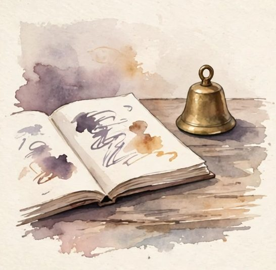
A small brass bell resting on a wooden desk beside an open register, abstract marks only.
Every feeling arrives with something to say, though it rarely says it plainly at first. Anger comes up the path loud and early, fear knocks before the house is awake, and sorrow sometimes sits on the step for days before it is noticed at all. This hall begins with a simple proposal: that these arrivals are messages, and that a message deserves to be heard before it is answered. Not obeyed, and not turned away unread, but heard — the way a letter is read to the end before anyone decides what it asks.
The house keeps a plain distinction at its centre, and everything else in these rooms is built around it. To hear a feeling is one act; to do what it urges, in the heat of its arrival, is another. Between the two there is a desk, a register, and a little time. A person can learn to stand in that interval without fear of the message and without haste to serve it. Much of what follows is only this distinction, looked at slowly, from many sides, in different lights.
This hall sells nothing and promises nothing. It offers no method that will make feelings quiet, and no claim that reading them well will make a life easy. It offers attention, practised the way a house is kept — a bell answered, a lamp lit, an entry made in the book. You are invited to walk the rooms at an unhurried pace, to notice which signals you obey without reading and which you refuse to hear at all, and to consider that both habits can be changed by the same small act: listening first.
2A Feeling Is a Message, Not an Order
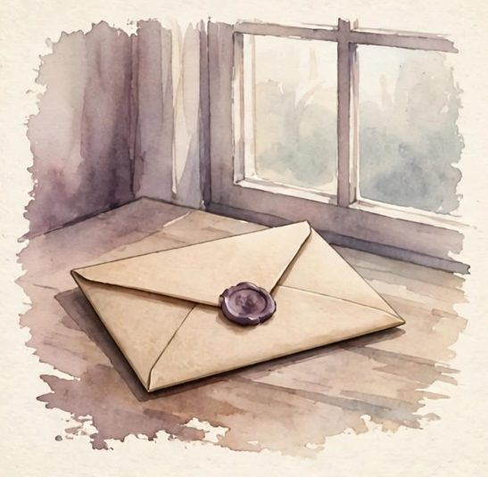
An envelope sealed with wax resting unopened on a table by a window, abstract marks only.
A message and an order may arrive in the same envelope, but they ask for different things. An order wants obedience, quickly, and it regards questions as delay. A message wants to be understood; it carries news, and news can wait an hour on the desk while the reader makes tea and thinks. Feelings, this hall holds, belong to the second kind. They come with information about the state of the house — a boundary touched, a value at risk, a loss uncounted — and information, however urgent it feels, is not a command.
The confusion is understandable, because a strong feeling does not feel like information. It feels like weather in the body, like a hand already on the door. Anger seems to arrive with its instructions written on it: speak now, strike now, leave now. Fear seems to carry its own verdict: run, hide, refuse. But the feeling and the instruction are two things, and the second is only a habit of reading, learned early and practised long. What is learned can be read again, more slowly, like a letter in a difficult hand.
To call a feeling a message is not to call it small. Messages decide wars and marriages; they empty houses and fill them. It is to say only that the feeling's authority is the authority of news, which must be weighed before it is used. The house does not ask anyone to distrust their signals. It asks that the signal be received at the desk, read in full, and answered by the whole person — not by the loudest sentence in it, delivered before the rest of the letter has been opened.
3The Keeper of the Signal Rooms
Every house in this series keeps a keeper, and this one keeps the Keeper of the Signal Rooms. The keeper's work is not to silence the bells or to answer them in a panic. It is to know where each bell hangs, what each lamp means, and which door a given knock belongs to. The keeper is the part of a person that can stand in the hall while the signals come in — curious about them, respectful of them, and not swept off the chair by any single one of them.
The keeper was not born knowing the house. The knowledge came the slow way: by mistaking a bell for a burglar, by answering an old alarm in a new room, by learning that the same signal can mean tiredness on one day and a crossed line on another. The register is full of corrected entries, and the keeper does not hide them. This is worth noticing, because the house does not ask for a reader who is never wrong. It asks for a reader who corrects the book, in pencil, and reads on.
Visitors sometimes ask whether the keeper feels anything, standing so calmly among the bells. The keeper feels everything that arrives; that is the whole of the job. What the keeper has given up is not feeling but flinching — the instant, unexamined jump from signal to deed. In its place there is a small set of motions, repeated until they are ordinary: rise, go to the desk, open the register, and ask the newest arrival, in a level voice, what it has come to say.
4The Signal Desk
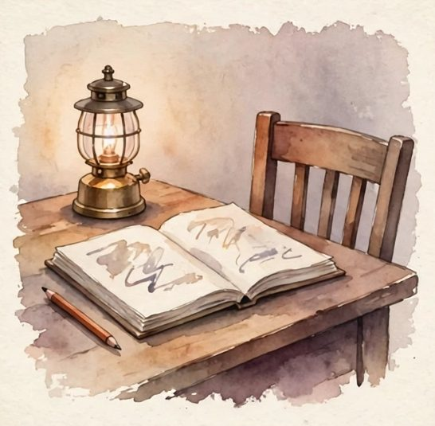
A keeper's desk with a signal lamp, an open register, a pencil, and a chair kept beside it.
Near the door of the hall stands the Signal Desk, and it is the hardest-working piece of furniture in the house. On it lie the register, a pencil worn short, a lamp, and a bell small enough to hold in one hand. Every feeling that enters the house is brought here sooner or later — not to be judged, and not to be framed, but to be entered in the book: what arrived, when it arrived, and what it seemed to be reporting, in the plainest words available.
The desk matters because memory is a poor clerk. An anger remembered at midnight is larger than the anger that arrived at noon; a fear retold for a week grows evidence it never had. The register holds the first version, the one written close to the event, and later readings can be checked against it. Many a long quarrel inside a person has ended quietly at this desk, when the entry showed that the feeling had reported something smaller, and older, than the story built on top of it.
There is a chair kept beside the desk, and it is part of the furniture of the practice. The chair is for the feeling itself, one might say — the message is invited to sit down and be heard at length, rather than shout from the doorway. What shouts from a doorway tends to repeat the same sentence. What sits, and is given time and a listening keeper, often finds its second sentence, and its third, and the third is frequently the one that needed saying all along.
5First, Hear It Arrive
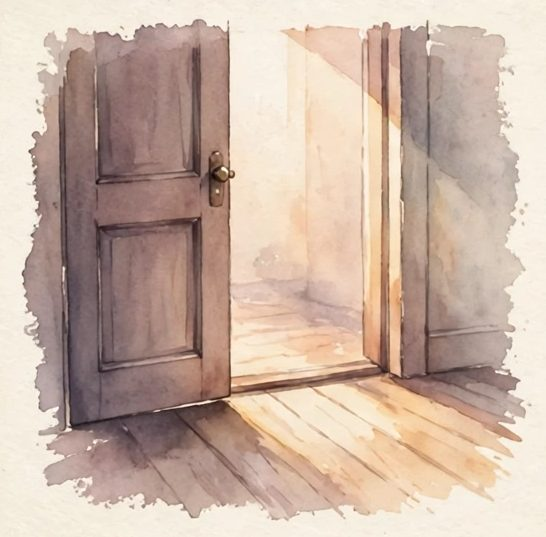
A door standing slightly open with morning light falling through the gap onto the floorboards.
Before a feeling is read, it must be heard arriving, and arrival has its own sounds. Some feelings come up the path openly, boots on the gravel, and knock like tradesmen. Some slip in with the post and are found hours later, lying among the ordinary letters. Some arrive so quietly that only the body reports them — a tightness in the shoulders at breakfast, a jaw set hard by noon — and the keeper learns of them last of all, like news of weather already past.
Hearing an arrival is a smaller act than it sounds, and that is its strength. It asks for no agreement and no reply. It asks only that the knock be registered as a knock: something is at the door, and it has come about something. The common failures both happen earlier than people think. One is to fling the door wide and let the visitor rearrange the furniture. The other is to hold the door shut and pretend, to the whole household, that nobody knocked at all.
The house practises a third motion, unhurried and plain. The keeper notes the hour, opens the door the width of a hand, and looks. Nothing is promised by this looking. The message may be urgent or it may be yesterday's news in a loud coat; either way, it will be known shortly, because it has been met rather than imagined. Most feelings, met this way at the threshold, lower their voices on their own — not because they were defeated, but because they were finally heard arriving.
6The Difference Between a Signal and a Summons
A signal and a summons can wear the same coat, and much of this hall's work is learning to tell them apart at the door. A signal reports: it says that something has happened, or may happen, or has been happening for some time. A summons commands: it says that something must be done, now, by you, in the way it dictates. Signals are the house's daily bread. Summonses are rarer than they appear — most of what arrives claiming to be one is a signal in a hurry.
The test the keeper uses is unglamorous. A signal can survive questions: what happened, when, how large, how sure. It can wait while the lamp is lit. A summons hates questions and calls every pause a betrayal; it insists that delay itself is the disaster. Feelings that demand instant obedience usually shrink under the first honest question, not because they were false, but because their urgency belonged to the delivery, not the news. The news itself often fits in one calm sentence, once it is given time to be said.
None of this makes the house slow where slowness would be a fault. A smoke alarm is a signal, and the house answers it at a run, because its report is simple and its evidence is in the air. The keeper's skill is not hesitation; it is proportion — matching the speed of the answer to the clarity of the report. What the house refuses is only the borrowed urgency of messages that have not yet said what they are about, arriving dressed as orders from a higher floor.
7The Rules of This Hall
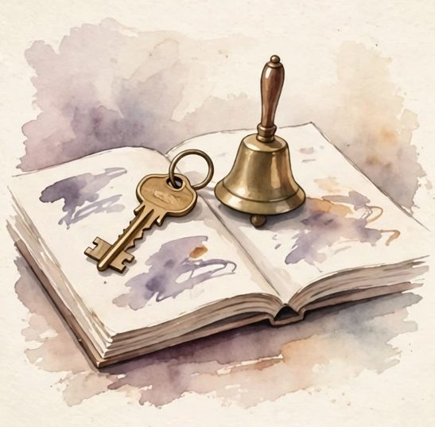
A brass house key and a small handbell resting together on an open register, abstract marks only.
The rules of this hall are few, and they are written where a visitor can read them without stooping. First: every feeling that knocks gets heard; none is turned away at the door for being unwelcome, unfashionable, or badly timed. Second: no feeling is obeyed on arrival; each one is read at the desk before it is answered. Third: the register is kept honestly, in plain words, without decoration. A house that keeps these three rules, the keeper says, can survive almost any weather its signals bring.
The rules protect two things that are easily lost. The first rule protects the quiet signals — the small unease, the low sorrow, the modest joy that does not push to the front of the queue. Without a standing welcome, only the loud survive, and a house that hears only its loudest feelings is governed by them. The second rule protects the person. A feeling answered after reading is an answer; a feeling obeyed before reading is a reflex, and a life steered by reflexes belongs, in the end, to whoever rings the bells.
There is no rule about what a person must feel, and the hall is careful on this point. Rules here govern the reading, never the arrival. Anger may come, fear may come, envy may come in its unfashionable coat; the house does not fine its visitors for knocking. What the rules ask is only that arrivals be met at the desk rather than at the gate — that the first response to any signal be a question, quietly put: what have you come to tell me, and how old is your news.
8A Message, Not a Master
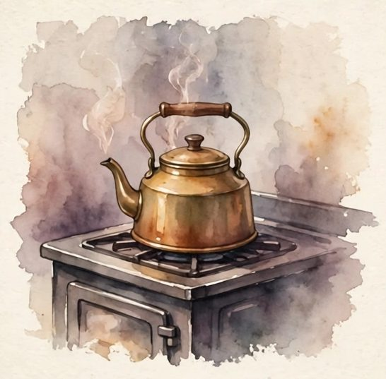
A kettle just off the boil on a quiet stove, steam thinning in still air.
A message serves the house; a master rules it, and the difference shows in small things. When a feeling is regarded as a message, the day bends around it a little — time is made, the desk is cleared, the report is heard. When a feeling is regarded as a master, the day is cancelled around it. Plans fall, letters go unwritten, other people's signals are turned away unheard, because the master is speaking and the household must attend. Most people have lived under both arrangements, often in the same week.
Feelings make poor masters for an unglamorous reason: they are specialists. Anger knows everything about the boundary that was crossed and nothing about the cost of the repair. Fear can price a risk to the last coin and cannot price the life that caution would leave unlived. Each reports faithfully from its own window, and each believes its window is the whole house. A master should see the whole; these messengers, honest as they are, see a room each — which is exactly why their reports are valuable and their rule would be ruinous.
The house is not ungrateful to its strong feelings, and this room should say so plainly. The anger that once guarded a real boundary, the fear that once pulled a hand back from a real fire — these are old servants of the house, and their reports still deserve the good chair by the desk. What they are not given is the keys. Gratitude and obedience are different currencies here: the house pays the first gladly, in attention and in thanks, and keeps the second for decisions made in full light.
9Why Feelings Are Not Commands
A command carries authority, and authority has sources: knowledge of the whole matter, responsibility for the outcome, a right to be obeyed. A feeling, examined closely, holds none of these. It does not know the whole matter — it knows its own report, vividly and partially. It will not be there to answer for the outcome; by the time consequences arrive, the feeling has usually left the house. And its right extends exactly as far as a hearing. What it presents as an order is only emphasis, the underline beneath a sentence.
There is a second reason, quieter and more practical. Commands must be consistent to be followed, and feelings are not. The same person, in the same week, can be commanded by anger to send the letter and commanded by fear to burn it; commanded by sorrow to withdraw from everyone and by loneliness, an hour later, to telephone the whole list. A house that obeys its feelings as commands must obey contradictions, and so obeys, in practice, whichever feeling shouts last. Reading them as messages restores the order that obedience destroys.
None of this demotes feeling to decoration. News from the boundary, news from the body's stores, news of what is valued and what is missing — a ruler who ignored such reports would govern blind, and this house has no wish to be rid of its messengers. It wishes only to keep the offices straight: feelings report, and the person decides. Where that order holds, a strong feeling is an asset, early and honest. Where it reverses, the strongest feeling in the house becomes, by default, its government.
10The Answer Is a Habit
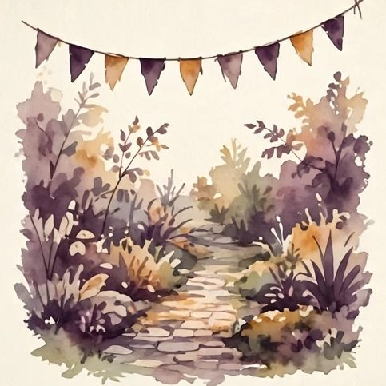
A row of small flags on a line above a garden path, hanging calm in mild air.
People sometimes ask at the desk for the answer — the thing to do when the loud feeling comes, as if it were a key kept in a drawer for emergencies. The house has no such key, and this room explains what it has instead. The answer is a habit: a small sequence of motions, practised on ordinary days with ordinary signals, until it holds on the hard days too. Nobody learns the desk's routine during the storm. They learn it in calm weather, entry by entry, and the storm finds it ready.
The habit is unshowy, and each part of it has been given a room in this hall. Hear the arrival. Name the feeling in plain words. Ask what it reports — what was crossed, what is missing, what is at risk. Check the date on the news. Then answer the need the message points to, which is often quieter and simpler than the deed the feeling demanded. Five motions, none of them clever, all of them repeatable by a tired person at a bad hour, which is precisely when they are needed.
A habit, unlike a resolution, does not argue. Resolutions are made in strong light and dissolve in strong feeling; habits are carried by the hands. The keeper's hands know the register's weight, the pencil's place, the chair kept beside the desk. After enough repetitions the pause between signal and answer stops feeling like effort and starts feeling like the shape of the house itself. That is the whole ambition here: not a person who feels less, but a house where feeling and answering have learned their proper distance.
11The Hall in One Sentence
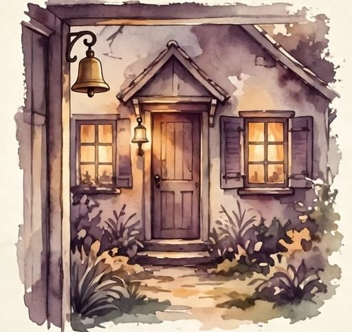
A whole house seen from its doorway, lamplight in the windows and a bell by the door.
If the whole hall had to be folded into one sentence and carried in a pocket, the keeper knows which sentence it would be. Hear every feeling as a message, read it slowly at the desk, and answer the need it reports — never obey the noise it arrives in, and never shut the door on the news it carries. Everything else in these hundred and twenty rooms is commentary on that sentence: examples, exceptions, weather reports, and the long practice of keeping it on ordinary days.
The sentence is built in three parts, and each part guards against a known failure. Hear every feeling: against the shut door, the pretence that nothing knocked. Read it slowly: against the reflex, the answer given before the message is finished. Answer the need, not the noise: against the two wasted efforts of doing exactly what the feeling shouted, or doing nothing at all and calling it calm. A person who kept only the middle clause would already live differently; the house keeps all three, in order, as one motion.
Visitors are welcome to copy the sentence into their own registers, in their own words, and the keeper suggests they do — borrowed sentences sit stiffly, like another person's coat. What matters is the shape: arrival, reading, answer. Some houses will phrase it with bells, some with letters, some with weather. The wording is theirs. The order of operations is the hall's whole teaching, and it fits on a card small enough to lose — which is why the house keeps re-teaching it, room by room, patiently.
12The First Rule of the House
The first rule of the house is the one the other rules stand on, and it is about listening, not about feeling. Nothing that knocks is refused a hearing. The rule sounds mild until its edges are examined: it covers the feeling that arrives at the wrong hour, the one that embarrasses the household, the one that contradicts the story the house tells about itself. All of them are heard. The keeper has learned that the signals a house refuses to hear do not leave; they knock from inside the walls.
The rule is often mistaken for softness, and it is worth being exact about what a hearing commits the house to. A hearing commits it to nothing beyond attention. The message may be read and set aside; the need may be answered next month or answered with a refusal. What the rule forbids is only the pretence — the claim, made to oneself at midnight, that no anger is felt, no fear is felt, nothing is missing. Pretence is expensive: it costs the register its honesty, and the house its early news.
Kept over years, the first rule changes the traffic of the house in a way visitors notice before they can name it. Feelings arrive more plainly when they expect a hearing. They knock once, state their business at a reasonable volume, and sit in the kept chair. The shouting, the keeper observes, was mostly a strategy learned in houses where only shouting was heard. A door that opens at a knock teaches quieter knocks — slowly, and with relapses, but the register, kept honestly, shows the trend across the seasons.
13Reading a Feeling Slowly
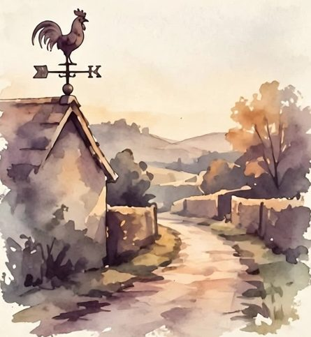
A weather vane on a roof turning slowly above a quiet lane at dawn.
A feeling, like a letter in an unfamiliar hand, repays slow reading and punishes haste. Read quickly, it yields its loudest word and little else: danger, insult, loss — the headline without the report. Read slowly, the same feeling gives up its details. The danger has a size and a date. The insult has an address and, sometimes, the wrong one. The loss has a name, and the name is older than expected. Slowness is not a luxury in this work; it is the instrument the reading is done with.
Slow reading has a technique, though the house is shy of the word. The keeper reads the feeling the way the register is kept: in order, and in plain words. What happened, just before the signal rose. What the body did first. What the feeling seemed to ask for, underneath what it demanded. What it would settle for, if its news were believed. These four questions, asked without hurry, have opened more stuck messages than any force the house has tried — because most feelings are not hiding. They are only badly lit.
There are feelings that cannot be read in one sitting, and the house makes room for them without apology. The register has a mark for these: to be continued. The entry is left open, the lamp is left on, and the reading resumes when the reader is rested, because a tired reader misreads in a particular direction — everything looks like an ending. Slow, in this hall, sometimes means days. The message keeps. What does not keep is the false urgency that insisted it be answered whole, at once, in the dark.
14The Signal That Arrives as Weather
A paper boat carried along a slow stream under a low stone bridge.
Not every signal knocks. Some arrive the way weather arrives — a change in the pressure of the day, noticed first in the joints of ordinary hours. The kettle takes longer to seem worth filling. A familiar task sits heavier in the hands. Nothing has happened, the register says, and yet the light in the rooms is different, and the keeper, who has learned to trust this instrument, writes the plainest entry in the book: weather, changing; cause, unknown; watching.
Weather-signals are easy to dismiss because they carry no event to point at, and houses like events. But the barometer is not lying when it falls on a windless afternoon; it is reporting early, from instruments finer than the eye. A low mood with no author, an unease with no object, a heaviness that visits on a clear day — these often prove to be the first report of something the household already knows and has not yet said aloud: a debt of sleep, a grief approaching its anniversary, a change already decided and not yet admitted.
The house's practice with weather is patience and notation. The keeper does not demand that the sky explain itself by supper. The entry is made, the day is lived a little more gently than planned, and the register is consulted again tomorrow. Half of these pressures lift unnamed, their work done. The other half gather, in time, into a knock at the door with a message that can finally be read — and when it comes, the weather entries behind it make its reading quicker, because the house was watching before it knew.
15Naming It Before It Names You
An unnamed feeling does not stay modest for long. Left without a name, it borrows the largest one available — everything, always, ruined, hopeless — and speaks in that voice until it is corrected. Naming is the correction. To say, in plain words, this is anger, and it is about the fence line; or this is fear, and it is about the winter; or this is sorrow, and it has the shape of one particular chair — this is not labelling for its own sake. It is giving the signal its true size.
The order matters, and the title of this room states it exactly. A feeling named by the keeper becomes a report that can be filed, answered, or respectfully set aside. A feeling left unnamed does the naming itself: it names the day a disaster, the friend a traitor, the self a failure — verdicts issued by a messenger who was only ever carrying news. The house does not blame the messenger for this. It simply keeps the naming rights at the desk, where the register's plain columns can hold a strong word to its evidence.
Plain words are insisted on for a practical reason: they age well in the book. Anger written as anger can be reread in a year and understood. Anger written in the grand style — betrayal, catastrophe, the end of everything — embarrasses its own entry by spring and teaches the keeper nothing. The desk keeps a short vocabulary on purpose: anger, fear, sorrow, joy, shame, envy, calm, unease. Most weather in a human house is some mixture of these, and a short list, honestly used, covers more sky than a long one used for display.
The Signal Desk
One desk receives all correspondence for this house — questions, corrections, and word of any feeling a visitor has been carrying unread for a long while: the anger that keeps arriving with the same news, the fear that will not state its evidence, the signal they are only just learning to read. It is read in the order it arrives, and entered in the register of signals.
16Loud Is Not the Same as Urgent
A lighthouse beam resting across calm water at dusk, the shore dark and quiet.
Volume is the easiest property of a signal to measure and the least reliable guide to its importance. The loudest feeling in the house on a given day is often simply the one with the least practice at being heard — it shouts because shouting has worked, or because it has never yet been met at a normal volume. Meanwhile the consequential message may be the quiet one in the corner: the small, repeated unease about a debt, a friendship, a pain in the body that the register has noted three times.
Urgency is a property of the news, not of the delivery, and the two separate cleanly once the message is read. News is urgent when delay itself does damage: the fire, the flood, the word that must be said before a door closes for good. Such news is rarer than loud houses believe. Most loud arrivals, read at the desk, turn out to carry news that is important and not urgent — a boundary to mend this month, a sorrow to sit with this winter, a fear to answer with information gathered over days.
The keeper therefore keeps two columns that other houses merge: how loud, and how pressing. Entries are made in both, honestly, and the day's work is ordered by the second. It is a small clerical habit with large effects. The loud retire from governing the schedule; the urgent, being few, get the house's full strength when they come. And the quiet signals — the ones that never learned to shout — find their entries already in the book, dated, waiting their turn in a queue that volume no longer controls.
17The Feeling That Repeats Itself
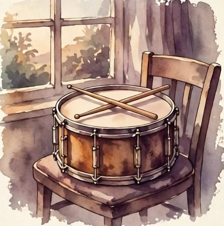
A drum resting on a chair by a window, its sticks laid neatly across it.
A feeling that returns on schedule is telling the house something by its returning, apart from anything it says. The same unease before the same meeting, the same anger at the same small scene, the same sorrow at the same hour of the evening — repetition is the register's underlining. The keeper reads a repeated signal twice over: once for its content, and once for its pattern, because the pattern is often the message. Something in the house is arranged so that this knock keeps being necessary.
There are two common reasons a signal repeats, and they call for opposite answers. The first is that the message has never truly been received: it was heard at the door and forgotten at the desk, answered with a gesture instead of the thing it asked for. Such signals return like honest tradesmen with an unpaid bill. The second is that the bell itself is faulty — an old alarm wired to a door that no longer opens onto danger. Its news is out of date, and the answer it needs is not obedience but retirement.
Telling these apart is desk work, and the register earns its keep here. The keeper lays the entries side by side — dates, hours, what stood nearby each time — and looks for what the repetitions share. If they share a cause that still stands, the house attends to the cause. If they share only a resemblance, the signal is thanked for its long service and its entry marked accordingly. Either way, the repetition ends not when the feeling is silenced, but when it has finally been understood correctly.
18A Signal Misread
Every register has them: entries where the feeling was read wrong, and the house acted on the misreading. Tiredness read as sorrow, and mourned for a week before a night's sleep corrected the book. Fear read as dislike, and a good door closed against a shy visitor. Anger read as strength, and obeyed, when it was only reporting a crossed line and asking, quite reasonably, for the line to be redrawn. This room exists so that misreadings are studied rather than hidden, because they are the house's best teachers.
Misreading has favourite disguises, and the keeper keeps a list. The first disguise is resemblance: the new feeling wears the coat of an older, louder one and is answered from the old file. The second is convenience: the feeling is read as whichever of its possible meanings asks least of the house. The third is flattery: anger read as principle, envy read as taste, fear read as wisdom. Against all three the desk has one defence, unglamorous and sufficient — the written entry, checked against what actually happened, in order, on the day.
The house is not ashamed of its corrected entries, and visitors are shown them deliberately. A register with no corrections is not a sign of a gifted reader; it is a sign of a book nobody rereads. The keeper's pencil exists because the first reading of a strong feeling is known, in this hall, to be a draft. What matters is the second reading — slower, better lit, with the first one's errors visible in the margin — and the willingness to act on the correction even when the first reading was more dramatic.
19The First Draft of a Feeling
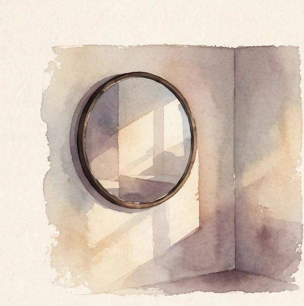
A mirror on a wall catching the first light of an empty room.
The first draft of a feeling is written fast, in large letters, and mostly in headlines. Betrayed. Ruined. Unsafe. Finished. It arrives within seconds of the event, before the facts have taken their coats off, and it has the confidence of all first drafts — the confidence of a thing that has not yet met its evidence. The house does not mock first drafts; every honest register begins with them. But it does not publish them either, in speech or in deed, until they have been edited at the desk.
Editing a feeling is not falsifying it, and the distinction matters to the keeper. The heat in the first draft is real, and the entry keeps it: felt strongly, at this hour, in this room. What editing revises is the draft's claims. Betrayed softens, under questions, to a promise kept differently than expected. Unsafe separates into a real risk, small and dated, and an old alarm sounding from another year. The feeling survives its editing with its news intact — which is how the house knows the editing was honest.
Time is the senior editor in this house, and the register is built to give it room. Entries are dated, drafts are left overnight without embarrassment, and some are left a full season, because a feeling about a person or a plan reads differently in another light. The keeper's rule is simple: nothing leaves the house — no letter, no verdict, no farewell — in first-draft language. What is still true after editing is usually worth saying. What is not has been answered, in full, by the editing itself.
20What the Body Reports First
A tide line of shells and pebbles along a quiet shore at low water.
Long before a feeling finds its name, the body has filed its report. Shoulders rise toward the ears an hour before anger is admitted. The breath shortens at the top of the stairs of a difficult conversation, while the mind is still insisting that everything is fine. Sleep thins, the jaw aches, the hands grow restless over ordinary tasks. The body is the house's oldest instrument and its least diplomatic one: it does not know how to phrase things kindly, and so it phrases them early.
The keeper learns to read this register too, because it is often the only one being kept honestly. A person can argue with a feeling; it is harder to argue with three weeks of entries noting the same tight back every Sunday evening. The body's signals have their own grammar — tension, heaviness, restlessness, the sudden wish to leave a room — and like all grammars it is learned by attention rather than by talent. What is noticed early can be asked early, while the message is still small enough to read whole.
None of this makes the body an oracle, and the house is careful here as elsewhere. A tight back is a report, not a verdict; it may mean fear, or a chair, or the winter. The desk regards bodily signals exactly like the others: entered plainly, read slowly, checked against the day. Their advantage is only that they arrive first and lie least. A house that reads them gains an hour, sometimes a week, on its own weather — and an hour, at the right moment, is the difference between hearing a feeling and being ambushed by it.
21Signals at Night
The signals that arrive at night are the same signals, in a darker room, and the difference matters. By day a feeling competes with bells, meals, work, and weather, and takes its natural size among them. At night the competition withdraws. The house is quiet, the desk is shut, and a single message can fill the whole building like a note held too long on an organ. Fears grow accurate-sounding at three in the morning. Sorrows find their most eloquent sentences. None of this eloquence is evidence.
The keeper keeps a night rule, and it is among the kindest in the book: nothing is decided at night that was not already decided by day. Night entries are made — the register lies open for them, pencil ready — but they are made as drafts, in the full knowledge that the morning reading will differ. Most night messages, reread at breakfast, divide into two piles without any struggle: the true ones, which keep their shape in daylight, and the swollen ones, which subside into the small, manageable worries they always were.
There is a tenderness in the house's handling of its night signals, because they often belong to the feelings with the least protection: the grief that behaves all day and grieves at midnight, the fear that holds its post politely until the house sleeps. These are not scolded for their timing. They are given the night chair, a lit lamp, and an entry in the book. What they are not given is the government of the house until morning — a rule they accept, most nights, once they have been properly heard.
22The Quiet Signals
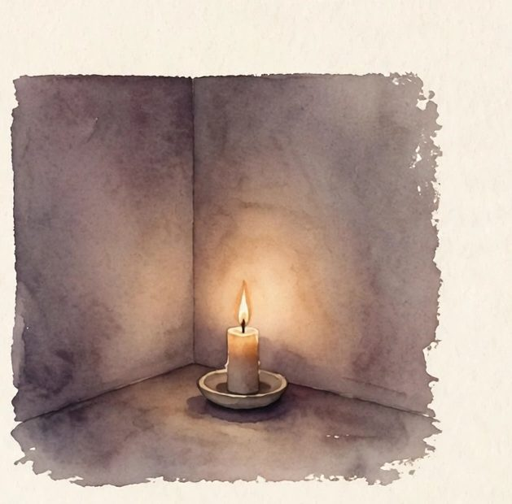
A single candle burning low in a sheltered corner of a wide room.
For every bell in the house there is a whisper, and this room belongs to the whispers. The quiet signals do not knock twice. A mild, recurring reluctance. A small flatness where pleasure used to be. A faint wish, easily mocked and therefore rarely voiced, to be elsewhere, doing other work, among other people. They arrive without urgency and are dismissed without malice, usually by the sentence that ends more readings than any other: it is probably nothing. Sometimes it is nothing. The register exists to find out which times.
Quiet signals are often the early form of large news. The boundary that will be defended in anger next year is crossed quietly this year, and noted, if at all, as a passing discomfort. The loss that will arrive as open sorrow first appears as a small tiredness around one particular name. Houses that keep the first rule — every knock gets a hearing — catch these messages while they are still sentences rather than storms. Houses that hear only volume meet the same news later, at full size, and call it sudden.
Reading the quiet signals asks a particular posture from the keeper: a willingness to take seriously what could easily be laughed off, including by oneself. The desk does not inflate them; an entry is an entry, neither a verdict nor a prophecy. But the small entries are reviewed, the way a careful house reviews the minor repairs before winter, and patterns are allowed to speak. Three quiet notes about the same door, across three months, are the house's way of clearing its throat. The wise keeper listens the first time it does.
23Two Feelings at Once
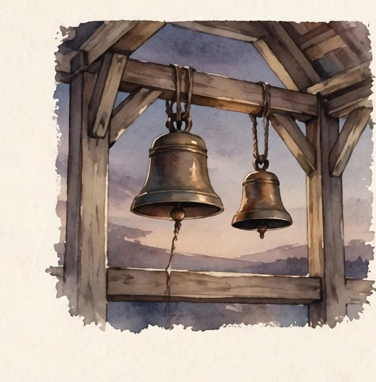
Two bells of different sizes hanging side by side in an open belfry at evening.
The register's neatest columns are troubled, sooner or later, by an entry that will not fit in one of them. Joy at a piece of news, and grief in the same hour, because the news changes a house someone loved. Anger at a friend, and underneath it a plain wish not to lose them. Relief and shame sharing one chair after a narrow escape. Two feelings at once is not a malfunction of the house. It is the usual state of a full one, and the desk is built to record mixtures without forcing them to resolve.
The temptation, faced with two feelings, is to hold an election: decide which one is real and dismiss the other as noise or hypocrisy. The house declines the election. Feelings are not candidates; they are reports from different rooms, and both rooms exist. The joy reports truly about the new thing. The grief reports truly about the old. A keeper who files both entries loses nothing but a false simplicity, and gains the ability to answer both needs — to celebrate without disloyalty, and to mourn without ingratitude.
In practice, the desk gives each feeling its own line and its own reading, in turn, the way two bells of different sizes are rung one after the other so both can be heard. What the house watches for is only the smuggling between them — anger borrowing grief's authority, fear wearing joy's coat to get itself obeyed. Kept separate in the book, the pair usually settle into an honest arrangement: this much celebration, this much sorrow, both answered, neither crowned. The entry closes not with a winner, but with two names, plainly written.
24A Feeling Is Data, Not a Verdict
A verdict ends a matter; data begins one, and the whole posture of this hall hangs on keeping feelings in the second category. A feeling tells the house what was registered, from one window, at one hour. It does not tell the house what the world is, what another person intended, or what the person feeling it is worth. Those are judgments, and judgments belong to a slower court than the doorstep. The moment a feeling is promoted to a verdict, the reading stops — and the reading was the point.
The demotion, if it feels like one, is worth examining, because data in this house is honoured work. Weather data, honestly kept, steers ships. The register's entries, honestly kept, steer years. What data asks is not obedience but attention: to be recorded without decoration, compared against other days, and allowed to correct itself as more arrives. A feeling kept as data can be wrong without disgrace — instruments are recalibrated, entries amended — and can be right without enthronement. It informs the decision. It does not get to announce it.
Other people's feelings fall under the same rule, and the house applies it gently in both directions. Another person's anger is data about their boundary, not a verdict on one's character; another's disappointment is a report from their window, to be read with respect and checked against one's own register. This symmetry is the hall's quiet protection against a great deal of weather. The house that reads all feelings as data — its own and others' — lives among messages. The house that reads them as verdicts lives among sentences, and serves them.
25What Anger Reports
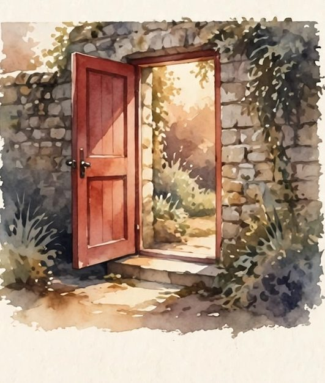
A red door standing open in a garden wall, light falling across the threshold.
Anger is the loudest regular at the Signal Desk, and the most misreported, so this section of the hall begins by stating its news plainly. Anger reports that something the house holds to be a boundary has been crossed, or that a limit — of patience, of strength, of what can be borne — has been reached. That is the whole of its usual message. Everything else anger appears to say, about what should be done and to whom, is the first draft talking, and the desk regards it accordingly.
Knowing the report changes the first question the keeper asks. Not: how do I make this stop, and not: whom shall I obey it against — but: where is the line. Sometimes the line is easy to find, still warm from the crossing: a promise bent, a confidence repeated, an hour stolen that was not the thief's to take. Sometimes the line is old and half-buried, and half the work of the reading is archaeology. Either way, the anger is rarely the problem to be solved. It is the bell above the place where the solving belongs.
Anger also reports, faithfully, on the house's own stores. The same crossing that earns a shrug in a rested month earns a storm in an exhausted one, and the register, comparing entries, teaches the keeper to ask the second question as well: what limit of mine was already near, before this knock came. This is not a way of dismissing the report. A tired house has real limits and they deserve defending. It is a way of reading the whole message, including the part that is about the reader.
26A Boundary Crossed
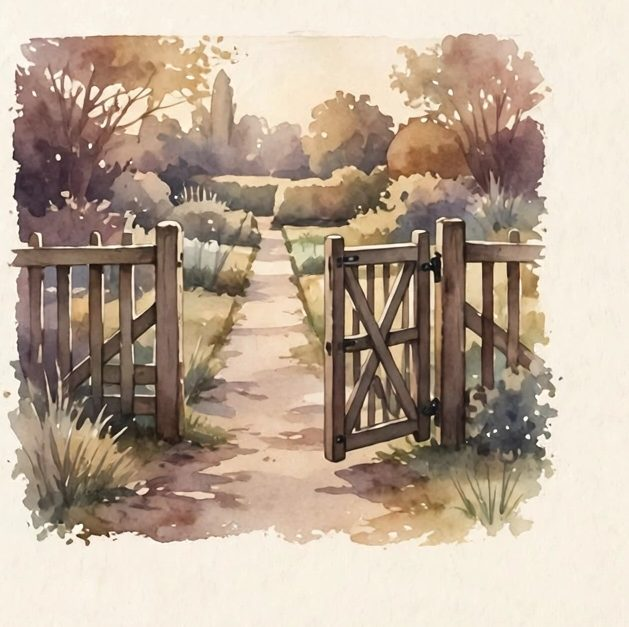
A garden fence with its gate unlatched, a path running straight beyond it.
A boundary, in the language of this house, is a line the household has drawn around something it needs in order to live well: its hours, its confidences, its work, its rest, its right to decide. Boundaries are not walls built against people; they are the surveyed edges of a garden, and gardens have gates on purpose. Anger is the signal that an edge has been stepped over — sometimes by a stranger, sometimes by a friend, sometimes, on honest inspection, by the house itself, which lent out more than it had.
The reading at the desk begins with location. Which line, exactly. Drawn when, and stated to anyone, or only assumed in silence — because a great many crossings happen at borders that were never announced, and the anger, examined, has to admit it is partly addressed to the house itself: you never said the gate was shut. This does not cancel the report. An unstated boundary is still a real one, and its crossing still costs. But it changes the answer from defence to surveying: the line must first be drawn where all parties can see it.
What anger asks for, underneath its noise, is usually modest: that the line be acknowledged, and the crossing not repeated as if it were a path. The house answers in that order — acknowledgment first, arrangements second — because answers that skip the acknowledgment rarely hold. A boundary redrawn calmly, stated plainly, and then kept by the house itself is a message answered. The anger that reported it can be filed, not suppressed and not obeyed, its work done. The register keeps the map; the feeling is free to go.
27Anger Arrives with News of a Limit
Not all anger is about a line crossed by someone else. A large share of it, read carefully at the desk, reports a limit inside the house itself: the well drawn lower than the household admitted, the store of patience spent past its mark. This anger arrives disguised as outrage at small things — a delayed letter, a careless sentence, a cup put down hard — and its disguise is convincing, because the small things are real. But the register, comparing the day with the month behind it, often finds the true entry underneath.
A limit reached is information of the plainest and most useful kind, and it deserves a better answer than shame. Wells are not scolded for their level; they are rested, or dug deeper, or drawn from more slowly. The house reads this anger as it reads its weather reports — as a gauge, not a character reference. The person who grows angry at everything in the third week of an effort is rarely discovering that the world has worsened. The gauge is reporting, accurately, on the effort's cost.
Answering this signal means answering the limit, not the small thing that announced it. Rest taken without apology. A commitment renegotiated before it breaks rather than after. Help asked for in plain words, early, while asking is still easy. Houses that refuse this reading pay for it twice: the limit is crossed anyway, and the anger, unanswered in its real request, goes looking for larger addresses. The desk's whole counsel is contained in the title of this room. The anger has brought news. Read the news.
28The Heat Before the Words
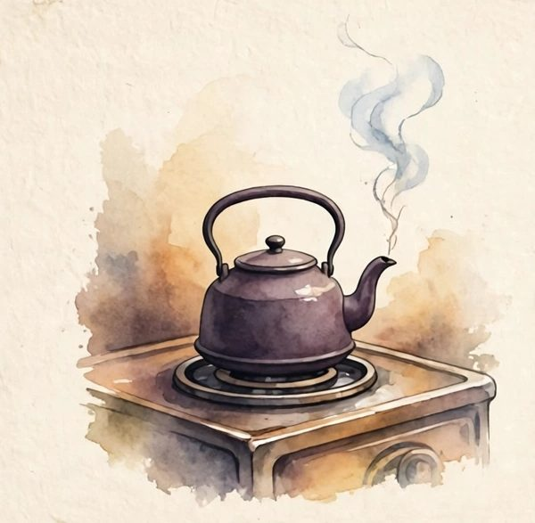
A kettle whistling on a stove, steam rising in a thin bright column.
Between the crossing and the speech there is an interval filled with heat, and this room is about that interval. The heat is physical first: blood up, breath short, the hands wanting work. Words formed inside it come out at its temperature, and most of the harm anger ever does is done by sentences spoken at full boil — accurate, some of them, and all of them delivered in a way that makes their accuracy useless. The house has no quarrel with heat. It has a rule about when words may be trusted.
The rule is borrowed from every kitchen: what is boiling is not yet ready to pour. The keeper's practice is to let the first heat spend itself on harmless work — the walk to the gate and back, the letter written and not sent, the entry made in the register in whatever language arrives, because the book can hold heat without passing it on. None of this is suppression. The message is being received in full. Only its delivery is being scheduled, the way strong weather is waited out before a boat is launched.
What survives the cooling is the report, and it is remarkable how much of it survives. The boundary is still crossed at supper; the limit is still reached; the thing that needs saying is still there, and now it can be said at a temperature the listener can hold. What does not survive is mostly the draft's decoration — the old grievances marched in for volume, the verdicts on character, the word always, the word never. The house counts that loss as the interval's whole profit, and it is considerable.
29Anger at the Wrong Address
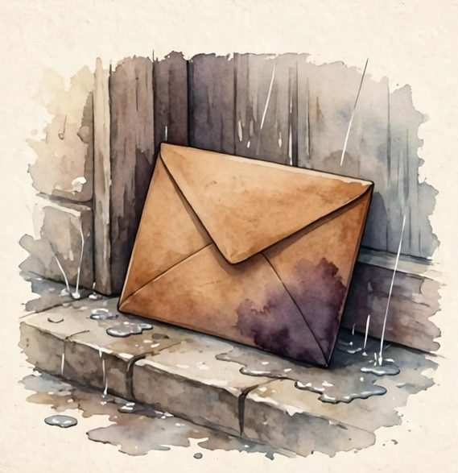
An envelope resting against the wrong doorstep, its corner darkened by rain.
Some anger arrives at the wrong door, and the house learns to check the address before answering. The sharp word saved for a stranger's carelessness may belong to a friend's old offence, carried unsent for a year. The fury at today's small refusal may be the interest on a hundred small refusals, none of them this person's. Anger is a faithful reporter and a careless postman: it delivers real news to whatever door is open, and an open door is often simply whoever is nearest when the store runs out.
The wrong address is usually discovered at the desk, by proportion. The keeper holds the feeling beside the event and notices that the two do not match in size — a gale of anger over a drizzle of cause. Such mismatches are not hypocrisy; they are arithmetic. The feeling is the sum of many entries, presented as one bill. Reading it means itemising: this much for today's crossing, this much for the older ones, this much for tiredness. Itemised, the bill can be paid correctly, each part to its own address, in its own time.
There is a cost to wrong delivery that the register makes visible over years. The near and harmless absorb anger meant for the far and guilty, and learn to dread the house's weather; meanwhile the true address, never written to, repeats its crossing undisturbed. The house's remedy is clerical, as usual: return to sender, re-address, deliver late rather than wrong. An apology, too, is a kind of re-delivery, and the keeper makes those entries without flinching. The message matters. So does the door it is left at.
30Old Anger, New Door
An old anger does not always announce its age. It can arrive at a new door — a new house, a new friendship, a new piece of work — dressed in the day's clothes, and be answered there as if the new door had earned it. The register is the only reliable witness against this confusion, because memory edits dates. A keeper who writes entries down can lay the old offence beside the new scene and see what the heart, left to itself, tends to merge: the resemblance is real, and so is the difference.
Resemblance is the mechanism, and it is not a foolish one. The house learned its alarms somewhere; a tone of voice, a kind of promise, a certain lateness once preceded real harm, and the bell was hung for good reason. The error is only in the filing — the alarm answers the resemblance instead of the event. Reading old anger at a new door means honouring the lesson while correcting the address: the bell may ring, the entry gets made, and then the new door is examined on its own evidence, which is usually thinner than the feeling suggests.
Given time, some old angers can be retired with honours, and the house keeps a small ceremony for it in the book: the entry is read once more, the lesson it carries is written out in plain words and kept, and the alarm itself is marked as belonging to its year. What remains is not amnesia. The house remembers the old room exactly. It simply stops sending its weather into every new one. Visitors sometimes call this forgiveness; the keeper calls it accurate filing, and notes that the effect on the household is much the same.
The Signal Desk
One desk receives all correspondence for this house — questions, corrections, and word of any feeling a visitor has been carrying unread for a long while: the anger that keeps arriving with the same news, the fear that will not state its evidence, the signal they are only just learning to read. It is read in the order it arrives, and entered in the register of signals.
31Anger That Protects Something Dear
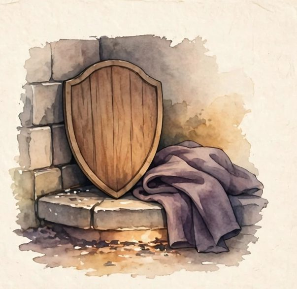
A plain wooden shield leaning by a hearth beside a folded cloak.
Some anger is a guard dog, and this room asks that it be read before it is scolded. It rises when something dear is approached carelessly: a child's standing among strangers, an old parent's dignity, a piece of work built slowly and handled roughly by quick hands. Read at the desk, this anger's report is almost tender underneath the noise. It says: this matters, it is not defended by anything else, and I am the fence it has. A house that cannot feel this anger has usually stopped admitting what it loves.
The guard's report still goes through the desk, because guards are not strategists. The dog that barks at the postman and the dog that barks at the thief are the same dog. Protective anger overestimates strangers, underestimates friends' clumsiness as mere clumsiness, and would, if obeyed, bite some of the very people the dear thing needs around it. The keeper's work is translation: take the guard's alarm seriously, check what actually approached, and then answer in the proportion the evidence supports — a word, a gate closed, or thanks and a hand on the collar.
What this anger asks for, once translated, is rarely battle. It asks that the dear thing be handled as dear: spoken of carefully, given time, not lent out lightly, not left where the careless pass. Houses that answer this signal well grow calmer around their treasures, because the guard learns it will be heard without being obeyed, and can afford to bark once instead of all afternoon. The anger remains on the register's staff, so to speak — employed, respected, and never, even on its loudest day, given the keys to the house.
32Answering Anger Without Obeying It
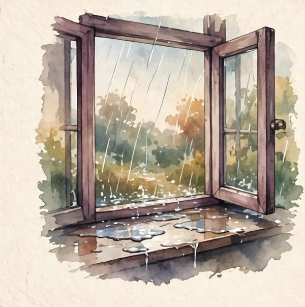
A window opened wide after rain, wet sills shining in cleared air.
This room is the hinge of the anger section, and its teaching fits in one line: anger is answered by addressing what it reports, not by performing what it demands. It demands, typically, a performance — volume matched with volume, the door slammed in the correct rhythm, the friendship ended by Friday. What it reports is simpler and more durable: a line crossed, a limit reached, something dear handled roughly. The performance fades by morning. The report, answered properly, stays answered for years.
An answer, in the house's usage, has three plain parts. The line is named, in words the other side can hear: this, here, is where the garden ends. The need is stated without decoration: the hour is mine, the confidence stays in this room, the work is handled gently. And the consequence is kept modest and real — not a threat borrowed from the heat, but the actual arrangement the house will keep. Sentences of this kind are not dramatic, and that is their strength. Drama is the demand talking. The answer talks in arrangements.
It is worth recording what answering-without-obeying does to the anger itself. It subsides — not because it was suppressed, but because its message has been delivered and acted on, which was its errand from the start. Anger that has been answered can be thanked, the way any messenger is thanked whose news changed the house's arrangements for the better. The register holds examples where this took one honest conversation. It also holds examples where the line had to be drawn three times. The desk does not promise once will be enough. It promises the method is the right one.
33The Sentence After the Anger
Every anger, examined at the desk, contains one sentence that it was trying to say all along — plain, bearable, and usually short. I need this to stop. That hour was promised to me. Handle this gently; it took years. The noise around the sentence can fill an afternoon, but the sentence itself fits in a breath, and finding it is the whole craft this section teaches. The keeper listens for it the way one listens for a step on a path: everything else is weather; the sentence is the arrival.
The sentence after the anger is recognisable by what it does not contain. It has no verdict on anyone's character, no history marched in for weight, no always and no never. It is addressed to the future, not the past — it asks for an arrangement, not a confession. And it can be spoken at room temperature, to the actual person, without either side needing to win. Sentences of this kind are the house's real correspondence. Everything written before them, in the heat, is drafts; the register is patient with drafts.
Finding the sentence is not always quick, and the house does not hurry the search. Sometimes it takes a night in the register and a walk at dawn; sometimes it takes asking, honestly, what the anger is protecting, and waiting until the answer stops being an accusation. But the search itself is an answer of a kind, because a house looking for its sentence is a house not sending its noise. When the sentence is found, it is usually worth the wait: one true line, delivered calmly, does the work that an hour of heat could not.
34Anger Spent, the Message Kept
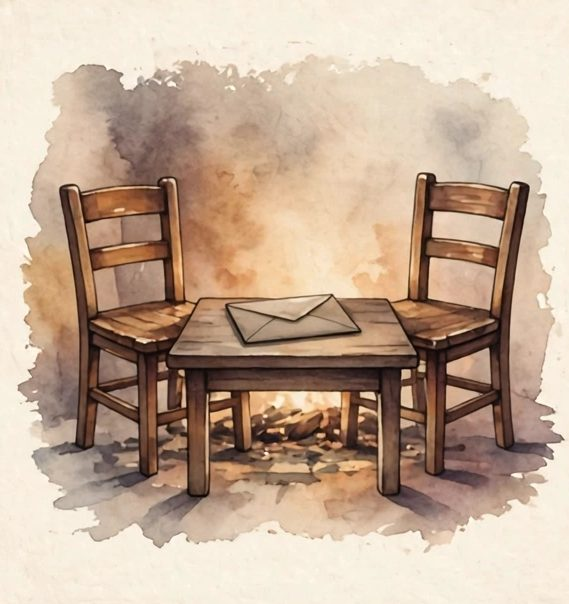
Two chairs by a low fire, a letter laid face down on the table between them.
Anger spends itself like weather; the message it carried remains on the desk after the sky clears. This room is about the housekeeping of that remainder. When the heat is gone, the keeper returns to the entry and separates the two things the visit left behind: the feeling, which is finished and can be let go without ceremony, and the information, which is entered in the permanent columns — the line, the limit, the dear thing — where it will inform the house's arrangements long after the storm is forgotten.
People often do the opposite housekeeping, and the register shows the cost. The message is dropped — nothing is rearranged, no line is drawn, the lesson evaporates with the mood — while the feeling is kept: reheated at intervals, retold with improvements, stored in the warm place where grudges are cellared. A house kept this way grows loud and learns nothing. Its angers return as sequels, each announcing itself as unprecedented. The keeper's order of business is deliberately reversed: keep the information, in writing; let the weather go, unwritten, unrehearsed.
There is a quiet satisfaction available in this room, and the house does not hide it. To read an old entry — a real storm, fully felt, years ago — and to find the feeling entirely gone while its arrangement still holds: the gate still mended, the hour still guarded, the work still handled gently. That is the evidence that anger was answered rather than merely survived. The message did its work and joined the house's structure. The anger, its errand complete, is not missed. The desk counts this among the best outcomes it knows.
35When Anger Is Really Tiredness
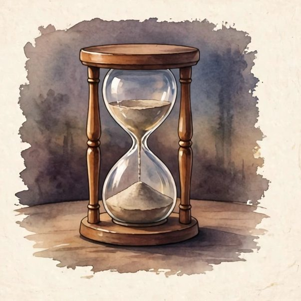
An hourglass on a desk at evening, its upper glass nearly empty.
Some entries in the register are corrected in a single word, and tiredness is the correction that appears most often in the anger columns. The day was long, the stores were low, and the small crossing that a rested house would have noted in pencil arrived instead as an outrage. Read in the morning, the entry embarrasses nobody; it instructs. The anger was real as weather and false as news — its true report was not about a boundary at all, but about a bedtime, a meal, a week that asked too much.
The desk has a test for this, crude and reliable: the same event, imagined after sleep. If the offence shrinks in the imagining, the anger was mostly fatigue wearing the day's clothes. This does not make the small crossing innocent, and the house still notes it. But it reorders the answer completely. The first reply to tired anger is not a confrontation; it is rest, food, and a postponed reading. Many a letter in the register's drawer of unsent drafts owes its place there to a meal eaten before the second reading.
Houses that learn this entry save themselves a particular kind of sorrow: the quarrel picked at the exact hour when nobody in it has anything left. The keeper's rule is posted where the tired will see it — no verdicts after dark, no lines drawn from an empty well, the register closes early on depleted days. Tiredness, in this hall, is regarded as a signal in its own right, with its own plain message: the house is spending more than it gathers. Answered honestly, it retires half the anger that used to visit.
36The Register of Crossed Lines
At the end of the anger section the keeper closes the book, and this room describes what the book now holds. The Register of Crossed Lines is not a catalogue of grievances; grievances are kept elsewhere, in houses that enjoy them. It is a surveyor's record: which lines exist, where they run, when they were crossed, by whom, how the crossing was answered, and whether the arrangement held. Read across a year, it is less a list of injuries than a map of a household learning its own shape.
The map teaches what no single anger could. It shows which line is crossed monthly because it was never stated aloud, and which was crossed once, answered once, and respected ever since. It shows the lines that were drawn in heat at the wrong place — too tight, around the wrong garden — and quietly resurveyed. It even shows lines the house drew around things it no longer owns, angers faithfully reported at borders of gardens given away years ago. A map like this is not an accusation. It is the beginning of accurate travel.
The section ends, then, not with anger mastered but with anger filed — its reports converted into arrangements, its storms into entries, its oldest alarms retired with their lessons kept. The keeper does not claim the bells will ring less often; a living house has borders, and borders get tested. The claim is smaller and sturdier: the house now knows where its lines are, and so its anger, when it comes, can be read in minutes instead of days. The next section opens another drawer of the desk. The lamp is moved. The register turns to fear.
37What Fear Reports
A narrow path climbing toward a distant signal tower on a hill.
Fear is the second great regular at the Signal Desk, and its report is as specific as anger's, though it is rarely given credit for specificity. Fear reports that something the house values stands, or may stand, in harm's way. That is its news: not that the harm is certain, not that it is near, and not that flight is the answer — only that a valued thing and a possible harm have been sighted in the same direction. Everything beyond that sentence is the first draft again, written in fear's large and hurried letters.
The valued thing is worth identifying first, because fear is a poor namer of its own treasure. It will say the house, the plan, the journey, when the entry, read slowly, is about a reputation, a child's regard, a small store of money that represents a larger store of freedom. Half of fear's power comes from this vagueness: an unnamed treasure feels like everything, and everything cannot be defended. Named at the desk, the valued thing takes its true size — usually precious, usually finite — and the fear takes a truer size beside it.
Fear therefore receives the same courtesy as every signal in this hall, and the same discipline. It is heard in full; its report is entered without mockery, because houses that mock their fear stop receiving its early warnings and get its late ones instead. And it is not obeyed on arrival, because fear, like anger, is a reporter and not a ruler: it knows the direction of the danger far better than it knows the road to safety. The reading begins, as always, with questions, and the first is the simplest. What, exactly, is precious here.
38Fear Points at What Matters
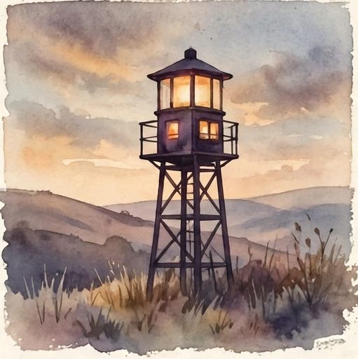
A signal tower against a dawn sky, its lamp room still lit.
A useful way to read fear, once the first heat of it settles, is as a pointing hand. Fear does not rise over trifles in a healthy house; it rises where the values are. The examination dreaded for months marks the work that matters. The conversation avoided all winter marks the friendship that matters. Read backwards, a person's fears are a fair map of their devotions — often a more honest map than the one they would draw on purpose, because fear cannot be bothered to point at anything merely fashionable.
This reading does not make fear welcome, but it makes it legible, and legibility is the hall's whole offer. The keeper sometimes goes further and thanks the signal privately, in the register's margin: noted, what matters here. A house that knows what its fears point at knows where its lamps should hang and its gates should be strongest. It can also spot the counterfeits — the fear that points at a neighbour's opinion, polished bright and treasured by habit, which on inspection the house does not actually hold dear at all.
There is a gentleness available in this room that the louder sections cannot offer. If fear points at what matters, then a frightened person is, among other things, a person in the presence of something they value — and the first answer to fear can be regard for that thing before any argument with the danger. The house practises this order deliberately: name the treasure, honour it in one plain sentence, and only then turn to the report of harm. Fear heard in this order often lowers its voice by itself, halfway to being read.
39The Alarm and the Fire
Every house with a bell must eventually answer the oldest question in this hall: is there a fire, or only the alarm. The two are confused constantly, in both directions. The alarm is mistaken for the fire, and the household spends the night fighting smoke that exists only in the ringing. Or the alarm is dismissed as a nuisance, silenced with a practised hand, on the one night the kitchen is genuinely alight. The keeper's whole craft, in the fear rooms, is the discipline of checking — going, in person, to look at the thing the bell is about.
Checking has a method, and it is mostly a refusal to argue with the bell. Bells are not argued with; they are verified. What would the fire look like if it were real — what evidence, visible from where, by when. What does the room actually contain when the door is opened and the lamp is carried in. Most alarms, checked this way, resolve into their components: a real wisp of risk, small and dated, and a large ringing left over from older houses and older fires. Both parts are entered in the book. Neither part is the whole story.
The house is equally firm about the opposite error, because calm can be a costume too. A signal dismissed three times without checking is a house training itself to sleep through bells, and the register keeps the dates of such dismissals in a column of their own. The aim is a household that neither panics nor sneers: that rises, looks, and reports what it saw in plain words. Alarm, checked, fire, none — that entry, repeated over years, is what trust in one's own signals is actually made of. Not certainty. A record of looking.
40Fear of a Door Not Yet Opened
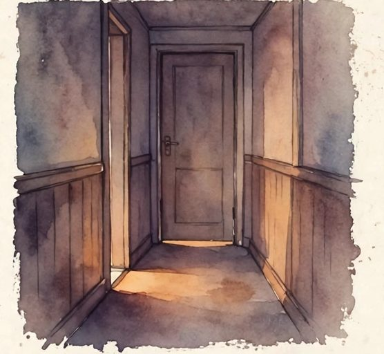
A door not yet opened at the end of a corridor, light showing under its edge.
A particular fear visits every house in this series, and it has its own room here: the fear of a door not yet opened. Behind the door is the unstarted work, the unsent letter, the new city, the conversation that will change the furniture of a life. Nothing behind it has happened; that is exactly the trouble. Fear, which reports on valued things in harm's way, does its most inventive work in front of closed doors, because the imagination is left alone in the corridor with the key, unsupervised, all night.
The desk's reading of this fear begins with a distinction the corridor hides: the fear is rarely of the room. It is of the moment of opening — of being seen to open it, of not being able to close it again, of the household's story changing its tense. Once the entry names the true object, the fear usually shrinks to a manageable size, because moments can be prepared for in ways that whole imagined rooms cannot. And the register notes, drily, how many opened doors in the house's history led to ordinary rooms, lamplit and survivable.
The house does not answer this fear by flinging doors open to prove a point; bravado is only obedience wearing the opposite coat. It answers by approach: the corridor walked in daylight, the handle tried, the key turned once and the door opened the width of one honest look. Fear of the unopened is answered with information, gathered at the pace the keeper can read. Some doors, looked through, are declined — calmly, on evidence, and that too is a success for the reading. The bell reported; the house looked; the house decided. That is all this hall has ever asked.
41Asking Fear for Its Evidence
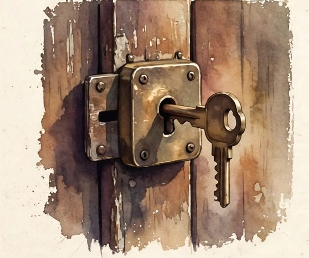
An old lock on a wooden door, its key half turned in the plate.
Fear rarely arrives empty-handed. It comes to the door of the Signal Rooms carrying what it calls proof: a memory of the last time, a story someone told, a headline half read, a feeling in the stomach that it presents as a document. The house does not turn such a visitor away. It does something quieter and harder. It invites the fear to sit down at the Signal Desk and lay its evidence out in the light, piece by piece, where each piece can be looked at separately instead of all at once.
When the evidence is spread out, it sorts itself into kinds. Some of it is sound: a real risk, plainly seen, worth a real precaution. Some of it is old: true once, in another room, in another year, carried forward by habit rather than by fact. And some of it is not evidence at all but volume — the same small worry repeated until repetition makes it feel large. The Keeper writes each kind in its own column of the register, because a fear answered as one lump is a fear answered badly.
Asking for evidence is not a way of arguing with fear, and it is not a trick for making it leave. Fear that has been questioned properly often stays in the room a while, quieter, its message clearer. What changes is the standing of the message. It is no longer a verdict handed down in the dark. It is a report that has been read, dated, and weighed — and a person who has weighed it can choose the next step with both eyes open, which is all this house ever asks.
42Fear That Guards an Old Wound
Some fears are not watching the road ahead at all. They are standing guard over a place where the hurt happened, long ago, and they have stood there so faithfully that the guarding itself has become the habit. The door they watch may open onto nothing dangerous now — a new house, a new person, an ordinary afternoon — but the fear does not check the door. It checks its memory, and its memory is exact about the pain and vague about everything that has changed since.
The house reads this fear with particular gentleness, because it is not foolishness. It is loyalty, misplaced in time. Something was learned at a real cost, and the fear is the part of a person still paying the guard's wage so the lesson is never lost. To scold it is to scold a sentry for doing the one job he was given. The Keeper instead asks after the wound itself: where it was, when it closed, what the room it happened in looks like now, in this year's light.
A guard can be relieved without being dishonoured. The fear is thanked for its long watch, shown the door as it stands today, and offered a smaller post — a lamp by the threshold rather than a bar across it. Some fears accept the demotion at once. Others need to be shown the quiet room many times, on many ordinary days, before they believe the watch is over. The register records the visits without impatience. In this house, an old guard is retired slowly, and never mocked on the way out.
43The Brave Thing Is a Question
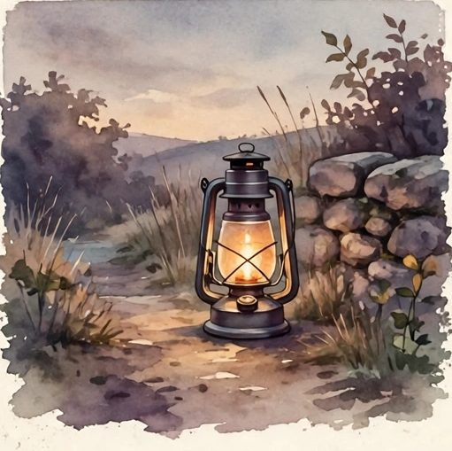
A lantern standing on a path at dusk beside a low stone wall.
Courage is usually pictured as a charge: a person striding forward, fear beaten down, the day seized by the collar. The Signal Rooms keep a plainer picture. In this house the brave act is most often a question, asked out loud, in a steady voice, at the moment when silence or flight would be easier. What exactly am I afraid of. What would it actually cost. What do I know, and what am I only imagining in the dark. The questions are small. Their effect is not.
A question does something that force cannot do: it gives fear a shape with edges. Unasked, fear spreads to fill whatever room it is in, the way lamplight fills a wall — everywhere, belonging to nothing in particular. Asked after, it contracts to its true size, which is almost always smaller and more specific than its shadow. A fear of everything becomes a fear of one conversation, one sum of money, one afternoon. And a specific fear can be prepared for, priced, postponed, or walked toward one step at a time.
The Keeper keeps no list of brave deeds on the wall of the Signal Desk, only a list of questions that have been asked there over the years, in handwriting calm and otherwise. Reading it, a visitor notices how ordinary the questions are, and how much of the house's work they quietly do. The lantern in the plate for this room is not a sword and not a shield. It is a light carried up to a thing so the thing can be seen — which is what a question is, held properly.
44Fear at the Threshold
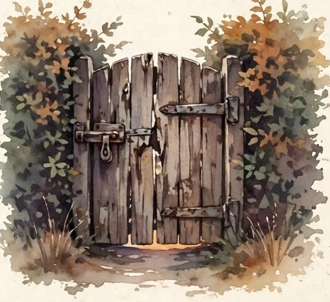
A scarred wooden gate in a hedge, its latch worn smooth by years.
There is a fear that belongs to thresholds, and it arrives precisely at the moment of crossing: the hand on the latch, the name about to be signed, the step from the path into the new room. It is worth learning to recognise, because it is so easily mistaken for a warning about what lies beyond the door. Often it is nothing of the kind. It is the feeling of the crossing itself — the small true fact that after this step, things will be different from before it.
The house distinguishes between fear that reports on the destination and fear that reports on the doorway. The first deserves its evidence examined, as the earlier rooms describe. The second deserves something simpler: acknowledgement. Of course there is a tightening at the gate. Gates are where one life is exchanged for another, in matters large and small, and a person who felt nothing there would be a person not attending. The Keeper lets visitors stand at the threshold as long as they need, without calling the standing a failure.
What the threshold fear asks, when it is read slowly, is rarely for retreat. It asks for a moment of honesty before the latch lifts: that the crossing be chosen rather than stumbled through, that what is being left is named as faithfully as what is being entered. Then the gate opens as gates do, worn smooth by years of other hands. The fear does not vanish on the far side. It simply becomes one more message that was heard at the right door, at the right time, and answered by a step.
45Answering Fear with Information
A surprising share of fear is not a judgement but a gap. It grows in the spaces where knowledge stops: the unopened letter, the unasked question, the appointment not yet made, the figure not yet looked up. In the dark of those gaps the imagination works unpaid overtime, supplying endings, and it is a pessimistic clerk — it files the worst ending first and loses the others. The Signal Rooms have a standing remedy for this kind of fear, and it is unglamorous: information, fetched plainly and read whole.
Information answers fear in a way that reassurance cannot. Reassurance says it will probably be fine, and fear, which is nobody's fool, hears the probably. Information says what the letter actually contains, what the sum actually is, what the date on the calendar actually holds. Sometimes the news is bad, and the house does not pretend otherwise. But bad news known is a smaller burden than bad news imagined, because the known kind has edges, and edges can be planned around, grieved over, or carried between two people.
The Keeper keeps a small ritual for this room: whatever has been dreaded unread for more than a week is read at the Signal Desk, in daylight, with tea. Not solved — read. The register notes the date the information arrived beside the date the fear began, and the gap between the two dates is its own quiet lesson. Fear had been answering letters it had never opened. The house prefers the slower, duller, kinder order: open first, read fully, and only then decide what the feeling has actually come to say.
The Signal Desk
One desk receives all correspondence for this house — questions, corrections, and word of any feeling a visitor has been carrying unread for a long while: the anger that keeps arriving with the same news, the fear that will not state its evidence, the signal they are only just learning to read. It is read in the order it arrives, and entered in the register of signals.
46When Fear Is Really Grief
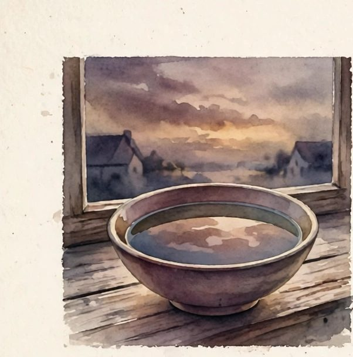
A bowl of water on a windowsill, perfectly still, holding the evening sky.
Now and then a fear, read patiently to the end, turns out to be wearing the wrong coat. A person dreads the empty house, the changed work, the quiet season ahead — and calls it fear, because fear is the word that comes fastest. But when the Keeper asks what exactly stands in harm's way, the answer is not a danger. It is an absence. Nothing is threatening to happen. Something has already ended, and the feeling at the door is grief, arriving in fear's clothing because grief's own knock was too sad to answer.
The distinction matters because the two messages ask for opposite things. Fear asks for protection: locks checked, plans made, dangers weighed. Grief asks for none of that. It asks for time, and room, and the right to name what is gone. A person who answers grief with precautions will be busy for years and comforted never, checking locks against a loss that no lock was ever going to prevent. The house sees this often enough that the Keeper asks one extra question of every stubborn fear: what, underneath, has already been lost.
When the answer comes, the work of the room changes its tempo. The register's columns for alarms are set aside, and the slower pages are opened. Nothing in this house hurries grief once it has been correctly named; the misnaming was the only error, and it is a human one. The fear, relieved of a duty that was never its own, usually quiets on its own — a messenger thanked and released, while the true visitor is shown to the chair by the window, where the longer conversations are held.
47Fear, Heard and Thanked
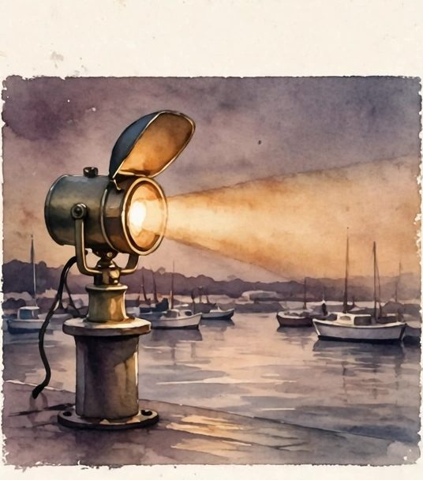
A signal lamp with its shutter open, a steady beam across a quiet harbour.
The last room of the fear corridor is the smallest and, the Keeper says, the one visitors find hardest to enter. Its practice is gratitude. Not gratitude for danger, and not the forced cheer of someone pretending the alarm was pleasant — gratitude for the signal itself, for the fact that something in a person stood watch through the night and rang the bell when it thought the house was threatened. A feeling that has been heard fully can be thanked, and a feeling thanked is a feeling that can stand down.
This is harder than it sounds because fear, obeyed for years, tends to expect either obedience or war. It braces for both. Thanks is a third answer it has no drill for. The person who says — I heard you, I checked what you showed me, some of it was real and I have seen to it, now you may rest — is neither obeying the alarm nor smashing the bell. They are treating the messenger as a member of the household, one whose report has been filed and whose shift, for tonight, is honourably over.
The register has a column for this, narrower than the others, headed simply with the date the fear was thanked. The Keeper notes that thanked fears return less often at full volume, and when they do return they knock more politely, as if they trusted the house to listen the first time. Nothing is promised here; some alarms are wired deep and ring for years. But the standing of the household changes when the bell is answered with thanks instead of dread. The watcher and the watched are, at last, on the same side of the door.
48The Register of Alarms
At the end of the day the Keeper sits at the Signal Desk and writes up the alarms. The register for fear is a plain book, ruled by hand, and its entries are kept in a fixed form: the hour the bell rang, what it claimed, what the evidence showed, and what was done. No adjectives are permitted in the fourth column. The discipline is deliberate. A day of fear, written down in flat sentences, looks very different from the same day remembered at midnight, and the difference is the whole point of the book.
Reading back over a season of entries teaches what no single alarm can. Some bells ring every week at the same hour and have never once been right; the register knows their names. Some rang once, were right, and changed the house's arrangements for good. Patterns appear that the ringing itself concealed — alarms that belong to tiredness, to hunger, to the hour after difficult news from elsewhere. The Keeper underlines nothing and concludes nothing in the margins. The book is a record, not an argument, and it persuades by accumulation alone.
Visitors sometimes ask why the house keeps such careful minutes of its own alarms, as if fear were honoured by the attention. The Keeper's answer is the doctrine of this hall in miniature. What is written down can be read, and what can be read can be answered, and what can be answered need not be obeyed in the dark. The register closes each night on alarms heard, weighed, thanked, and filed — the bell silent on the desk beside it, neither master of the house nor enemy of it, but an instrument in its proper place.
49What Sadness Reports
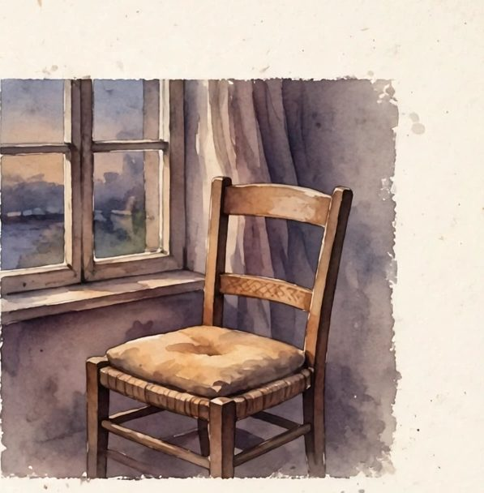
An empty chair by a window, its cushion still holding the shape of rest.
Sadness is the most honest messenger in the house, and the least theatrical. It does not ring bells or crowd the threshold. It comes in quietly, sits down in the room where something is missing, and reports, in plain terms, that something valued is gone, or going, or was never there to begin. The Signal Rooms teach that this report is nearly always accurate in its essentials. Sadness rarely invents its losses. Where it misleads, it misleads about size and permanence — never about the fact that something mattered and is missed.
To read sadness, then, is to ask after the valued thing. Not what is wrong with the person feeling it — the house rejects that question at the door — but what, exactly, is being missed, and what its absence leaves unlit in the day. A person, a place, a version of the future, a season of being needed: the register has held them all. Naming the loss precisely is slow work and often wet-eyed work, but it converts a weather of sorrow into a sentence, and a sentence can be answered where a weather can only be endured.
The house does not promise that a read sadness lifts. Some losses are permanent, and the sadness reporting them is not an error to be corrected but a true entry to be kept. What reading changes is the sadness's company. Unread, it spreads across every room, tinting hours that have nothing to do with the loss. Read, it takes its proper seat — the chair by the window, kept for it — and the rest of the house, while not merry, is at least its own again. The report has been filed. The messenger can stay as long as it needs.
50A Loss Ungrieved
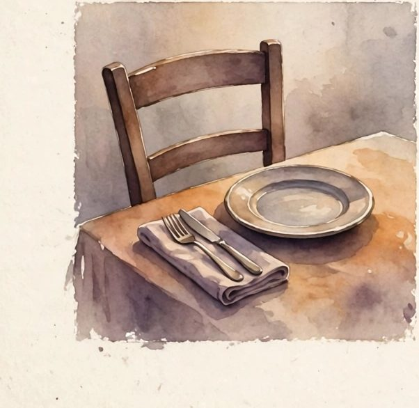
A chair left empty at a set table, a folded cloth resting beside the plate.
Some sadness in the register has no date of loss beside it, because the loss was never granted a day. These are the ungrieved losses: the ones too small, people said, to mourn — the friendship that faded, the work that ended without ceremony, the health quietly revised downward, the future that was planned in detail and then, without any single blow, became impossible. No one brought a dish. No one sat with it. The loss went into the house unannounced and has been living in it ever since, unnamed and therefore unfinishable.
Ungrieved sadness has a recognisable behaviour. It attaches itself to small occasions — a song, a street, an empty afternoon — and grieves at full weight for a trigger that cannot account for it, because it is carrying all the occasions that were skipped. The Keeper reads these entries with care and without surprise. The feeling is not disproportionate. It is overdue. It is doing, late and all at once, the work that was not permitted to be done in instalments, at the times when the losses actually occurred.
The remedy the house offers is modest and entirely within a person's own authority: give the loss its day, late. Name it in the register with its true date, as far as memory allows. Let the chair at the table be seen as empty, on purpose, once, with attention. Grief does not check the calendar before it accepts the honour; a loss mourned years late is mourned all the same. What changes is the sadness's address. It moves out of every small occasion and into its own room, where it can be visited deliberately instead of met by ambush.
51Sadness Asks for Slowness
Every feeling in the Signal Rooms asks for something, and part of reading a feeling well is hearing the request inside the report. Sadness, when it is listened to closely, almost never asks to be fixed. It asks for slowness. It asks that the day be walked at the pace of the loss, that decisions be postponed where they can be, that the world's ordinary cheerfulness not be required of the person for a while. It is, the Keeper says, the politest request in the house, and the one most often refused.
The refusal usually comes dressed as kindness. Cheer up, keep busy, look on the bright side — the phrases arrive quickly, within hours of a loss, and they all carry the same concealed instruction: return to normal speed. But sadness is not a delay in the schedule. It is information about weight, and weight is carried at the pace weight requires. A person who slows down for their sadness is not indulging it. They are doing the arithmetic honestly, the way a porter does, adjusting the step to the load rather than pretending the load is light.
In practice the slowness this room recommends is unremarkable: fewer rooms entered per day, one honest answer — I am low, and it is the loss — given instead of the bright performance, errands forgiven. The register notes nothing dramatic against these days, only a mark in the margin shaped like a small hourglass, meaning the house ran slow on purpose. Sadness that is granted its pace finishes its report sooner than sadness fought at full speed, though the house keeps no statistics and makes no promises. It only keeps the chair, and the quiet, and the time.
52The Room Where Something Is Missing
A slow river passing under willow branches in late afternoon light.
Every long-kept house has one: the room that is entered less often since the change, the shelf rearranged around a gap, the hour of the day that used to be filled by a voice, a task, a presence. Sadness, in the Signal Rooms, is understood as the feeling that patrols this room. It does not create the emptiness. It reports it, faithfully, each time the door is passed. The ache a person feels at the threshold is not the room punishing them. It is the messenger doing its rounds and finding the space still unaccounted for.
There are three things a household can do with such a room, and the house has watched all three. It can be sealed — door locked, name unspoken — and then the whole corridor cools around it and the sadness goes underground into dreams and small occasions. It can be stripped bare and repurposed in a week, which works about as well as painting over damp. Or it can be kept: entered sometimes, kept clean, its missing thing named plainly when the room is used. Only the third arrangement lets the feeling finish its work.
Keeping the room does not mean keeping it forever, or keeping it unchanged. It means the absence is allowed an address while it is still an absence, so that the rest of the house is not haunted by an unnamed one. Over seasons the room changes — the light is noticed again, a new use suggests itself quietly, the visits from sadness grow shorter and less sharp. The Keeper does not schedule this. The register only records the visits, and trusts the oldest fact in the building: a loss that is housed honestly takes up less of the house than a loss denied a room.
53Grief Is a Form of Regard
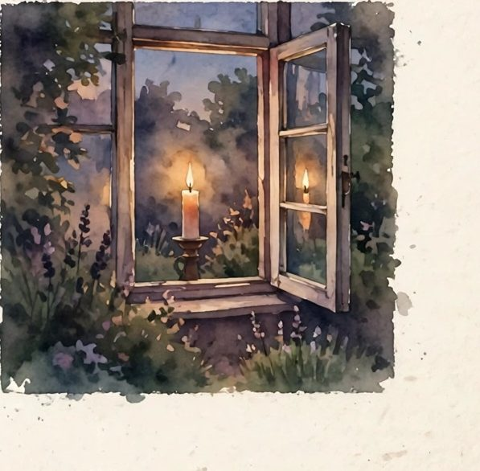
A single candle burning in a window at dusk, seen from a quiet garden.
The Signal Rooms hold one doctrine about grief that visitors are asked to read twice, because it reverses the usual accounting. Grief is not the price of having valued something; it is the continuation of the valuing. The regard that was paid to a person, a place, a shared life, does not stop when the object of it is gone. It changes its form — from company to sorrow, from daily attention to the ache of attention with nowhere to land. Grief is what regard looks like after the door has closed.
Read this way, the size of a grief is a report about the size of the regard, and nothing else. It is not a report about the griever's strength, or weakness, or recovery, or failure to recover. The house is firm on this point because the opposite reading is so common and so cruel: that a long grief means a person is doing sorrow wrong. The register contains entries spanning decades beside entries spanning weeks, and the Keeper honours the long ones no less. Some things were simply valued at a depth that takes that long to carry.
This doctrine does not make grief pleasant, and the house would not insult a visitor by suggesting otherwise. It makes grief intelligible — a signal whose content is honourable. The candle in this room's plate is not a decoration. It is the oldest signal there is: a light kept in a window for someone absent, lit without any expectation that it will bring them back, lit because the lighting itself is the regard. Sadness read in this light is not a problem in the house. It is one of the house's reasons for existing.
54Tears as Plain Information
The house keeps a small, stubborn teaching about tears: they are information, and plain information at that. They report that something has reached the depth where words run out — that the loss, or the relief, or the kindness, is larger than the sentences available for it. That is the whole content of the signal. Tears do not report that a person is broken, or manipulative, or too much. They report volume and depth, the way a river gauge reports a river: without apology and without commentary.
Much of the trouble with tears is the audience's, and the Signal Rooms are honest about this. Other people, handed a feeling they cannot fix, often hurry to stop its visible form — tissues offered at speed, subject changed, reassurance piled up like sandbags. The intention is kind and the effect is a closed door. The Keeper's practice is duller and better: let the tears finish. A gauge is not argued with. The reading is taken, the moment is allowed its weather, and conversation resumes when the water settles, carrying the information with it.
Visitors are often surprised to learn that the register records tears without any special mark, on the same lines as every other signal, because in this house they are not an event. They are weather data from the inner rooms, as factual as the bell and the lamp. A person who can let their own tears be information — this mattered, this much, at this depth — has learned the hall's central skill in one of its hardest forms: to receive a message exactly as sent, neither obeying it as an order nor shutting the door on it as noise.
55Sadness That Is Really Loneliness
Two cups on a table, one full and one empty, steam rising from one only.
Some entries in the sadness register, read back at the season's end, are found to have been misfiled. The feeling reported a loss, the loss was named and honoured — and the ache stayed exactly where it was, unimproved by all that correct attention. When the Keeper re-reads such an entry, a second question is asked, the one this room exists for: is anything actually gone, or is someone simply not here. For a surprising share of stubborn sadness, the true report is not loss. It is loneliness, which wears sadness's coat because it has no coat of its own.
The two feelings are cousins but their requests differ entirely. Sadness over a loss asks for slowness and regard; the missing thing cannot be replaced and must be carried. Loneliness asks for company — specific, ordinary, unglamorous company — and it can be answered, often within the week, by a telephone call, a shared meal, a door knocked on. A person who answers loneliness with the rituals of grief will be solemnly honouring an absence when what they needed was to send one message to one living person. The house sees the mix-up constantly and judges it never.
Loneliness also has a shy habit of disguising its request, because the request embarrasses it. It says the house is sad, when it means the house is empty at the hours when it used to be full. The Signal Desk keeps a plain test for the distinction: imagine the valued company restored for one evening, and watch whether the feeling lifts at the picture. If it lifts, the entry is rewritten under its true name, and the answer is not patience but an invitation, sent. The register has a whole shelf of such corrected pages, and no shame attaches to any of them.
56Letting Sadness Finish Its Sentence
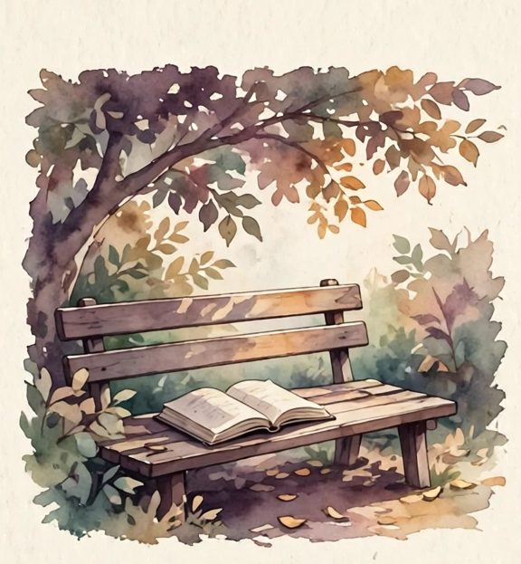
A bench under a tree with a book left open and face down on its seat.
Sadness, like a visitor with a long story, is often interrupted. Not rudely — the interruptions are usually the sufferer's own. Halfway through the feeling's account of what is gone, the mind hurries in with corrections: others have it worse, it was long ago, there is much to be grateful for, the day is waiting. Each correction may be true, and each one closes the messenger's mouth mid-sentence. The Signal Rooms practise a different courtesy. Sadness is heard to the end of its sentence, even when the sentence is one the listener already knows by heart.
There is a reason the unfinished sentences return. A feeling that has not completed its report does not file it and leave; it queues. It comes back at the next quiet moment with the same account, from the beginning, at the same weight — not because it is stubborn but because it was never received in full. The Keeper compares it to a letter read only halfway and answered as if whole: the reply misses, the sender writes again. Much of what people call being haunted by a sadness is, in this house's reading, a queue of half-heard reports waiting their turn.
Letting the sentence finish is a small, learnable act of hospitality. It looks like nothing from outside: a person sitting with the ache a few minutes longer than comfort allows, declining to correct it, letting the last clause arrive — what exactly is gone, and what it meant, and what the days are like without it. Heard whole, sadness tends to do something its interrupters never credit: it ends. Not forever, and not on command, but for today. The register entry closes with the feeling's own full stop instead of the listener's, and the difference shows in how quietly the house sleeps that night.
57The Kept Chair by the Window
In the sadness corridor there is a chair that belongs to no one and is kept for everyone: by the window, cushion in place, a blanket folded over its back though the room is warm. It is the house's answer to a question visitors ask in a dozen forms — where, exactly, is grief supposed to sit. Not everywhere, and not nowhere. Here. The chair is the physical form of a doctrine repeated through these rooms: a feeling given its proper seat does not take all the others. A feeling with no seat takes whichever it finds, at whatever hour it chooses.
The chair is kept, which is to say maintained: dusted, repaired, its blanket refolded. The keeping matters. A household that tends the place where sorrow sits is a household that has stopped treating sorrow as an intruder and started treating it as a resident with a known address. People sit in the chair deliberately — on anniversaries, on bad evenings, on the days when the missing is simply loud — and the deliberateness is the point. The visit is chosen. The sadness is met at its own seat, in daylight or lamplight, and not ambushed by it in the kitchen at midnight.
Nothing about the chair is solemn, and the Keeper resists visitors who try to make a shrine of it. Tea is drunk in it. Letters are read in it. Sometimes, in the bright months, nobody sits in it for weeks, and it is simply a chair by a window, holding the light. That ordinariness is its success. The house does not dramatise its grief furniture; it just keeps one honest seat for the feeling that reports a loss, so the feeling need not stand in every doorway. The register of losses, kept nearby, begins where the chair leaves off.
58What Sadness Does Not Ask
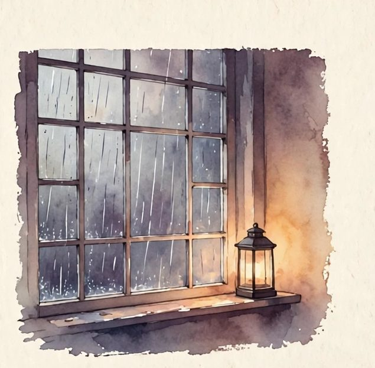
A wide window with rain against the glass and a lamp lit inside the room.
Half of reading a feeling is hearing its request. The other half — this room's whole subject — is hearing what it does not ask, and refusing to deliver that in its name. Sadness does not ask for the future to be cancelled. It does not ask that the other rooms of the house be darkened in sympathy, or that every plan be postponed until it leaves, or that the people still present be treated as insufficient because they are not the person who is gone. Sadness reports a loss. The larger surrenders are not in its message; they are added by exhaustion, or by guilt wearing sadness's voice.
The confusion is understandable, because when sadness is strong it seems to colour the whole sky, and a coloured sky looks like an instruction. The Signal Rooms teach the distinction patiently: a feeling's weather is not its request. Rain makes the whole window grey, but the rain is not asking the house to stop having lamps. The Keeper reads each sad entry and sorts it into report and weather — what is actually gone, on one line; how large the grey feels today, on another. The first line gets the answer. The second line gets only acknowledgement, and time.
Visitors who learn this sorting often describe a particular relief, as if a negotiation had ended. They had been bargaining with their sadness as though it demanded everything — the year, the work, the remaining loves — when it had only ever filed a report about one thing. Answer the report: honour the loss, keep the chair, walk slowly. The rest of the demands were never made by the messenger, and the house does not honour demands that were never made. The lamp in the plate for this room burns inside, in the rain's despite, and that is not defiance. It is accuracy.
59Carried, Not Cured
A basket of letters tied with string resting on a shelf of kept things.
Somewhere in this corridor the house must say its plainest sentence about sorrow, and it says it here, without decoration. Some sadness is not cured. It is carried. The loss at the centre of it is permanent, the regard it continues is permanent, and the feeling that reports both will return for the rest of a life in some measure — quieter in some years, sharper in others, never entirely struck from the register. The house offers no apology for this doctrine and wraps it in no promise. It is simply what the entries, kept honestly over decades, show.
Carried is not the same as suffered at full weight forever, and the distinction is the room's kindness. A thing carried changes the carrier's arrangements: a handle is fitted, a strap is padded, the load is shifted between shoulders and seasons, friends are allowed to take one end of it for a stretch of the road. The weight itself does not vanish, but it stops being an ambush and becomes an item — known, lifted deliberately, set down at night. Many visitors find that the word carried, replacing cured, ends a war they had been losing against their own faithfulness.
The Keeper is asked, sometimes, whether a house that promises nothing is worth the walk. The answer given at the desk is the answer of this whole hall. The house promises attention, which is not nothing: a loss correctly named, a chair kept, a register honestly written, a messenger neither obeyed nor barred from the door. What a person does with a carried sorrow over a lifetime is theirs — it has become, for some, the tenderest part of their character. The house only keeps the light on in the corridor, and the door of the room unlatched, and the record straight.
60The Register of Losses
At the end of the day the Keeper writes up the losses. The register for sadness is the heaviest book at the Signal Desk, and the plainest: a date, a name or a few words for what is gone, and a line for how the missing showed itself today. No consolations are entered. The book is not there to make any entry smaller than it is. It is there so that no loss the house carries is carried anonymously — so that each one, however old, has its name written somewhere in a steady hand.
The writing itself is part of the doctrine. A loss that exists only as a feeling must be re-felt to be remembered at all; a loss that exists in the register can be visited at reading size, on purpose, and closed again. Visitors leaf through their pages and are often steadied by the flatness of the entries — this, on that date, felt in this way — beside the enormity of what the lines refer to. The book does not shrink the grief. It gives the grief a shelf, and a shelf is a thing a person can walk away from and return to, which a fog is not.
When the day's entries are done, the Keeper does not close the book with any ceremony. It is shut, and the desk lamp is turned down, and the house goes on with its evening — the losses recorded, the chair by the window empty until it is needed, the rain or the clear sky doing what it does outside the glass. That is the last word of the sadness corridor, and it is deliberately undramatic. A loss written down has been heard. A loss heard need not shout to be remembered. The register keeps it, so the heart is free to keep the rest of the house.
The Signal Desk
One desk receives all correspondence for this house — questions, corrections, and word of any feeling a visitor has been carrying unread for a long while: the anger that keeps arriving with the same news, the fear that will not state its evidence, the signal they are only just learning to read. It is read in the order it arrives, and entered in the register of signals.
61What Joy Reports
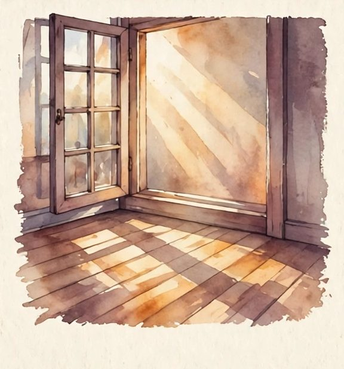
Sunlight falling through an open window onto a polished wooden floor.
The corridor of joy and calm is the quiet end of the Signal Rooms, and visitors consistently make the same mistake in it: they walk through as if there were nothing here to read. Joy, in the doctrine of this house, is a messenger like any other. It reports that something valued has been touched — met, fed, expressed, or simply come near — and the report is as factual as any alarm in the register. A person who reads only their sorrows and fears is keeping half a set of books, and the missing half is the half that says what the life is for.
Joy's report is specific when it is read slowly. It is rarely about everything; it gathers at particular points — a certain work, a certain person's company, a certain hour of the day, a certain use of the hands. Read across a season, those points form a pattern, and the pattern is a map of what a person actually values, as opposed to what they say they value or were told to. The Keeper considers the joy register the most practically useful book at the Signal Desk, because it is the only one that records, in the person's own evidence, where their life is already working.
The house therefore gives joy the same courtesy it gives the harder signals: it is heard on arrival, entered without embarrassment, and answered deliberately. Not obeyed — joy makes poor orders, and a life steered by every bright gust is as unfree as a life steered by every fear. Heard. The message is received, the valued thing is named, and the household arranges, where it honestly can, for more doors to open onto that quarter. Joy asked nothing more than this in any entry the Keeper has ever taken down. It is the easiest messenger in the house to satisfy, and the most often left standing unread.
62Joy Points at a Value Touched
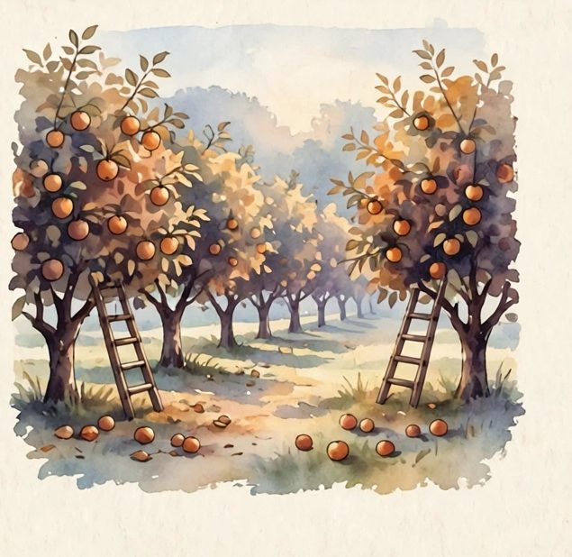
A ripe orchard row in morning light, ladders leaning against the trees.
If joy is a report, its content is an arrow. It points, with unusual precision, at the thing that was touched: not pleasure in general, which fades before it can be examined, but a value — something the person holds, often without having listed it, as part of what makes a day a good one. The skilled hands used well. The friend understood exactly. The work done at the right difficulty, neither beneath the strength nor beyond it. Joy arrives already knowing which of these it was, and it will say so, if the arrival is not rushed past.
The reading matters because values discovered this way are more reliable than values declared. A person can announce that they prize ambition, rest, adventure, or order, and be sincere, and be wrong — the declared list is written by the part of the mind that gives interviews. Joy keeps the other ledger. It lights up at what it lights up at, indifferent to the interview, and over a year its entries correct the official account with gentle persistence. The Keeper trusts the lit-up page over the stated one, and suggests, mildly, that visitors do the same.
There is a second use for the arrow, quieter than the first. When the hard corridors are being walked — when fear is loud or the losses are fresh — the joy register is the house's evidence that the valued things exist and have been touched before, in this same life, by this same person. It does not argue with the sorrow. It simply testifies. The orchard in this room's plate is not a symbol of happiness in general; it is a picture of a specific harvest, in a specific row, which is how joy always reports: not that life is good, but that this, here, was.
63Calm Is Also a Message
Calm is the signal most likely to go entirely unrecorded, because it does not feel like a signal at all. Fear rings, anger heats, sadness aches, joy brightens — each announces itself. Calm simply is, and a household can live inside it for a whole season without once thinking to enter it in the register. The Signal Rooms correct this with a doctrine stated as plainly as the house can state anything: calm is also a message. It reports that, for now, the valued things are not threatened, the losses are housed, and the body's watch can stand at ease.
Reading calm means treating it as information rather than as the absence of information. It says something positive and specific: this arrangement of days, this company, this pace, this work — these are, at present, in accord with what the person values. That is data no other feeling supplies, and it is perishable data, because calm is noticed mostly in retrospect, after it has been traded away. The Keeper enters calm days in the register with the same care as alarms, partly so that the house will know, later, exactly what the quiet was made of.
There is also a warning folded into this room, and the house delivers it gently. Calm is not the goal of the Signal Rooms, and a life arranged to feel nothing but calm would be a life with the doors shut against every messenger worth hearing. Calm is one signal among many — the report of enough, for now — and its proper use is orientation, not retreat. The visitor who has learned to notice calm, name what composes it, and be grateful without clutching has learned to read the quiet frequency. The next room asks what happens to a signal that nobody thinks to question.
64The Signal Nobody Interrogates
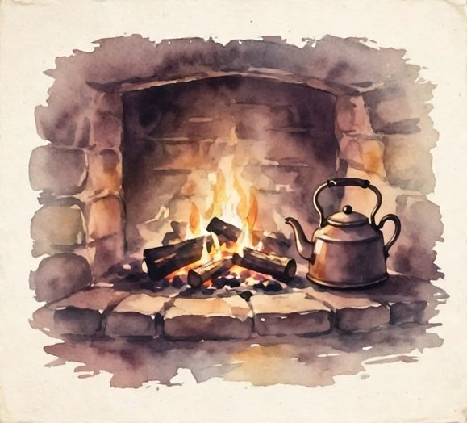
A hearth with a low steady fire and a kettle resting warm beside it.
Every other messenger in the house gets cross-examined. Fear is asked for its evidence, anger for its boundary, sadness for its loss. Joy alone is waved through the door without a single question, on the grounds that good news needs no reading. The Signal Rooms dissent, politely. A signal nobody interrogates is a signal nobody knows the content of — and joy's content, as the last rooms showed, is among the most useful in the building: which value was touched, by what, and whether it can be visited again on purpose rather than by accident.
The interrogation of joy is not suspicion, and the house is careful to keep the two apart. Joy is not doubted, accused, or audited for worthiness. It is interviewed, the way a trusted correspondent is interviewed on returning from a journey: where did you go, what did you see, what was the light like there. The answers take a minute and repay it for years, because a joy that has been read can be returned to deliberately — the same work, the same company, the same hour protected — while a joy waved through remains weather, pleasant and unrepeatable.
There is a folk fear, which the Keeper has heard at the desk many times, that examining joy will spoil it, the way explaining a joke flattens it. The register disagrees. Its bright pages hold joys that were questioned and lost nothing — they gained an address. What spoils joy is not attention but its opposite: the rush onward, the reaching for the next thing, the treating of a lit hour as an interval between errands. The hearth in the plate burns low and steady, uninterrogated by the hurried, and it has warmed the room all evening precisely because someone, at some point, learned where the wood is kept.
65Joy Asks to Be Noticed, Not Explained
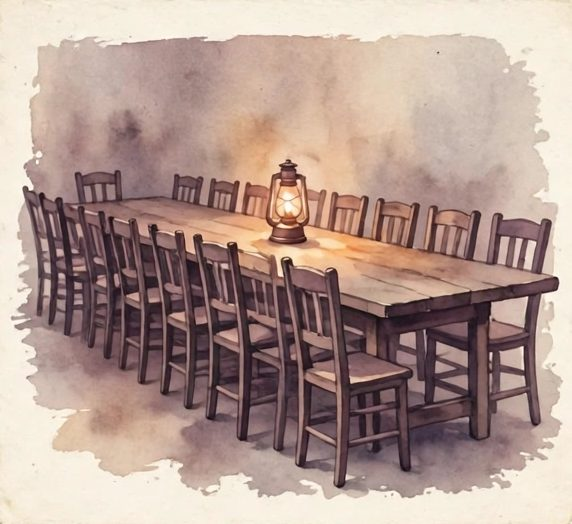
A long table with many chairs, one lamp lit at its centre in calm air.
The previous room argued for questioning joy, and this one sets the limit of the questioning, because the house holds both truths at once. Joy asks to be noticed. It does not ask to be explained. The difference is the difference between looking at a lit window and taking the lamp apart. Noticing is an act of attention: this is bright, this is the hour, this is who is at the table, this is the taste of it. Explanation is an act of accounting: why this, why now, do I deserve it, how long will it last. One receives the message. The other changes the subject to the machinery.
The explained joy has a recognizable fate: it thins as it is accounted. The mind, asked to justify a bright hour, begins grading it — smaller than last year's, probably ending soon, not to be trusted — and the grading mind cannot simultaneously be the noticing one. The Signal Rooms therefore teach a sequence. Notice first, fully, with the senses and the register both open. Let the hour be an hour. The gentle questions of the last room belong to the desk afterwards, in the evening's writing-up, when the joy has already been had and cannot be talked out of itself.
Visitors sometimes worry that noticing without explaining is a kind of carelessness, a refusal to understand their own lives. The Keeper answers with the house's standing distinction: understanding a feeling means reading its report, and joy's report is short. A value was touched. That is the whole message, and it is complete. The long reports in this building come from fear and grief; joy files a postcard. To demand an essay from a postcard is not rigour. It is a way of being elsewhere during the brightest part of the day, and the house, which keeps the register of bright hours, recommends being present for them instead.
66Contentment, the Quiet Frequency
Contentment is the least vivid signal in the house, and the Keeper speaks of it the way radio listeners once spoke of a steady station beneath the static: a quiet frequency, easy to miss, on which the household's ordinary life is broadcast. It is not joy, which arrives in bright hours, and it is not calm exactly, which reports a truce. Contentment is the low, durable sense that the days, as currently arranged, are acceptable in their fabric — the work bearable or better, the company sound, the rooms one's own. Nothing is being celebrated. Nothing needs to be.
Because it never rings a bell, contentment is usually discovered only by its interruption: the week it goes missing, the morning the ordinary day suddenly feels like an imposition. The Signal Rooms suggest noticing it earlier and cheaper, by tuning for it deliberately — a habit of asking, in quiet moments, not whether the day is wonderful but whether it is, on the whole, all right. The answer, in contented seasons, is a modest yes that asks for no celebration. Entering that yes in the register sounds like a small act. It is, in fact, how the house learns what its peace is made of before the peace is disturbed.
Contentment also has a doctrine of protection, stated once and then left alone. It is not improved by being chased, upgraded, or compared with the brighter signals of other households; comparison is the one static guaranteed to drown it. It is maintained the way a frequency is maintained — by not knocking the set. The visitor who finds the quiet station is advised to sit with it the way the plate's window seat is sat in: without agenda, without improvement, letting the afternoon be the afternoon. The house counts this a mature reading. Some signals complete their whole message by being received, and this is the chief of them.
67Laughter as a True Report
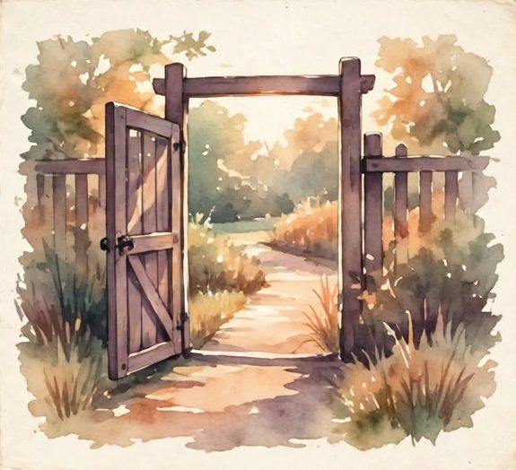
A garden gate standing open onto a path bright with early sun.
Laughter holds a curious rank in the Signal Rooms: it is the only messenger whose report nobody, including the person laughing, is tempted to doubt. A room laughs, and for a moment the whole household is in agreement about something — that the thing was absurd, or apt, or a relief, or a recognition too exact for words. Laughter reports connection: between people who catch the same point at the same instant, or within one person, between the expectation and the world, when the two collide more kindly than feared. The register records it as seriously as any alarm, because the information is real.
Read across time, a household's laughter is a precise instrument. What makes a person laugh — reliably, helplessly, across years — maps their values as faithfully as their joy does, with the added honesty that laughter cannot be performed on schedule or faked for the record. The Keeper can tell a great deal from the laughter column: which company loosens it, which subjects it guards, whether it has gone missing from the entries lately, which is one of the earliest signs the house knows that the hard corridors are taking more than their share of the day.
The house also notes what laughter does to the other signals, because it is the great re-sizer of the building. A fear laughed at — kindly, by its owner, in good company — is rarely laughed away, but it is returned to scale, its shadow shortened. Grief, in the houses where laughter still visits, is not contradicted by it; the two take turns at the table like old residents who know each other's hours. The doctrine is only this: laughter is a true report, and a household that can still receive it is receiving, along with the joke, a certified bulletin that the valued world is intact.
68Ease Is Information Too
A still pond at morning holding the reflection of a calm sky.
There is a class of signals the house calls the unmarked kind: the task that flows, the conversation that needs no steering, the morning the body rises without negotiation. Ease. It produces no bell, no heat, no ache, no brightness — nothing the register was designed to catch — and so it passes through most households entirely unrecorded, while every difficulty is documented in triplicate. The Signal Rooms hold this to be an accounting error with consequences. Ease is information too, and some of the most directing information a life produces.
What ease reports is fit. Where a thing is continually easy — a kind of work, a kind of company, a use of the morning — something in the arrangement matches something in the person: the strength to the task, the tempo to the temperament. Where a thing is continually grinding, the opposite report is being filed, whether or not it is read. A household that records only its frictions will conclude, from its register, that everything is friction, and will steer by a map with all the smooth roads left off. The Keeper insists on entering ease wherever it is found, if only to keep the map honest.
Ease is also, the house warns, a quiet signal and therefore easy to misread in one particular direction: it is not a command to stay. A road can be smooth because it is the right road, or because it is downhill and familiar, and ease alone cannot say which. It is one report among many, to be read beside boredom's report and joy's, which sometimes contradict it. But read it must be. The pond in this room's plate reflects the sky without effort or distortion, and the house's whole teaching is in the image: the clearest information in the building arrives on the days nothing seems to be signalling.
69Answering Joy with Attention
Every feeling in this hall is answered somehow, and the answer to joy — the one the house teaches, against strong competition from habit — is attention. Not pursuit, which frightens joy off; not analysis, which thins it; not the immediate photographing and announcing of it, which turns a guest into an exhibit. Attention: the simple, deliberate act of being present to the bright thing while it is bright, with the senses open and the next errand postponed by the length of one honest minute. It is the smallest answer in the register and, the Keeper says, the one most often skipped.
The skipping has a pattern worth reading. Joy frequently arrives in the middle of other business — mid-task, mid-errand, mid-worry — and the household, trained to drop everything for alarms, has no drill for dropping anything for brightness. The bell is answered in seconds; the lit window is noticed in retrospect, from the far end of the day, with the familiar sentence: it was good, earlier, I think. The Signal Rooms propose the reversed drill as a learnable skill. When the signal is bright, pause. The errands of an ordinary day can survive a minute's delay better than the joy can survive being unnoticed.
Attention also turns out to be joy's only real multiplier. The house keeps no doctrine that noticed joy grows — that would be a promise, and this house makes none — but the register shows that noticed joy is remembered, and remembered joy can be returned to, described, shared accurately, and used as evidence in the harder corridors. Unnoticed joy does none of that work; it warms an hour and leaves no entry. So the answer taught here is modest to the point of plainness: when the messenger in the bright coat arrives, stop, look up, and let the minute be spent on it. The register will do the rest.
70The Signal of Enough
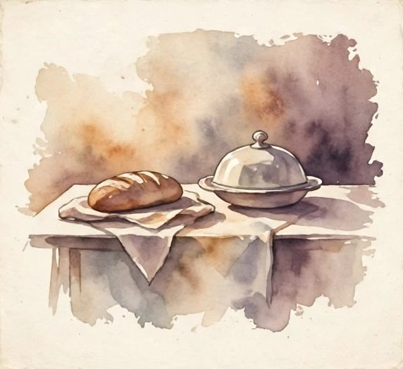
A table set simply and sufficiently, bread and a covered dish in quiet light.
Underneath joy and calm both, the Signal Rooms locate one signal they treat as the bass note of the whole corridor: the feeling of enough. It reports that, in some quarter of a life, the measure is full — enough food, enough work, enough company, enough rest, enough beauty coming through the window — and it asks for the rarest response in the building: no action at all. Enough is the only messenger whose message is that nothing further is required, and households, trained by every other signal to respond, find the instruction surprisingly hard to follow.
The difficulty is that enough is quiet and its counterfeit is loud. Wanting has a publicity department; enough has a register entry. A person can be surrounded by sufficiency and feel the pull of the next thing, because the pull is not a report about the stores — it is a habit of the road, a momentum. The house teaches the distinction by asking a question with a factual answer: in this quarter, what would more actually add. Sometimes the honest answer is something, and the entry is filed under wanting. Often the honest answer is nothing, and the feeling dissolves into what it always was: enough, unrecognised.
To recognise enough is not to renounce wanting, and the Keeper is careful not to make a virtue out of a reading skill. Wants are messengers too, and some of them are the subject of the next corridor. The signal of enough governs only its own quarter and its own hour: here, now, the measure is full. The table in the plate is not bare and it is not laden; it is set simply and sufficiently, which the house considers one of the most accomplished sights in the world. Learning to see it — and to let the seeing finish the matter — is the graduation of this corridor.
71Rest, When It Reports Itself
A hammock strung between two trees in soft afternoon shade.
Rest has a signal of its own, distinct from tiredness, and the Signal Rooms are careful to keep the two entries separate. Tiredness reports a debt. Rest reports something else entirely: the moment, arriving unmistakably in a household that has been running hard, when the body and the mind together set down the load — not because it has been dropped, but because setting it down is, for this hour, permitted. The shoulders descend. The breath lengthens. The next task loosens its grip on the attention. It is one of the clearest bulletins in the building, and one of the most frequently overridden.
The overriding has a respectable costume: there is always one more thing, and it is always genuinely there. The house does not argue with the list. It points out, from the register, what happens to households that never honour the rest signal: the signal does not disappear — it degrades, arriving later and later in the day, then only in illness, then only in collapse, the way a bell ignored at the door is replaced by the door being broken down. Read early, rest is a small obedience: an hour in the shade. Read late, it is a season lost. The information is the same; only the price changes.
There is also a subtler reading this room exists to teach: rest reports what it follows. A household that notes when true rest arrives — after which work, in which company, at what point in the week's rhythm — learns the shape of its sustainable life from the evidence, rather than from advice. The register has a narrow column for it; the entries are unglamorous: after the long walk, not after the screen; on the second day, not the first. Nothing here is more practical, or more often dismissed as mere comfort. The house files rest under information, where it belongs, and lets the hammock in the plate argue wordlessly.
72The Register of Bright Hours
At the end of the day the Keeper opens the brightest book at the Signal Desk, and writes up the hours that lit. The register of bright hours is kept with the same plain discipline as the registers of alarms and losses: a time, a place, what was touched, who was there. No entry is inflated. A good cup of tea in a shaft of sun gets its line, in the same hand as the larger joys, because the book's purpose is not ceremony. It is evidence — a household's own record, in its own handwriting, of where its values are actually being met.
The Keeper is asked, more often for this book than for any other, why the writing is necessary. The bright hours are the pleasant ones; surely they can be trusted to memory. The register's long view gives the answer. Memory keeps the peaks and drops the pattern — it remembers the great day and forgets that the ordinary Tuesdays, in a particular company, at a particular task, supplied most of the light. Only the written book shows the distribution, and the distribution is what a household steers by. People have changed their weeks, and then their lives, on the evidence of this unassuming ledger.
When the entries are done, the book is closed without moral or summary, exactly as the heavier registers are. The doctrine of the corridor stands behind that plainness: joy read is joy doubled in usefulness and not diminished in warmth. The house goes to its evening with the day accounted — alarms weighed, losses named, bright hours entered — and the lamps along the shelf of the plate burn in a row, unremarkable and sufficient. What the next corridor holds is harder to look at, and the house does not pretend otherwise. But it is read with the same lamp, at the same desk, by the same unhurried method.
73The Unfashionable Signals
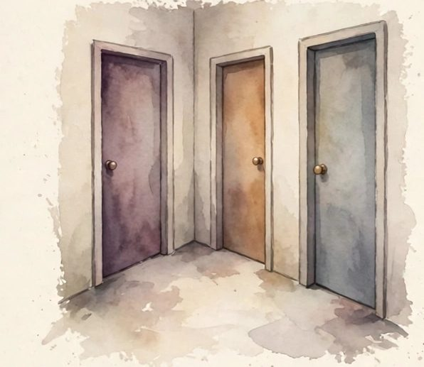
Three small doors in a row along a corridor, each painted a different muted colour.
The last corridor of the Signal Rooms is the one visitors tend to hurry, and the house has arranged its lighting accordingly: plain, even, impossible to hurry in. Behind its three small doors live the unfashionable signals — envy, shame, and boredom — the feelings a person is least willing to enter in any register, because admitting them feels like a confession about character rather than a report about the world. The doctrine of this hall applies here without amendment, and that is the corridor's whole argument. These too are messengers. These too are information, not verdicts.
The unfashionable signals suffer from a double misreading the other feelings escape. Fear and sadness, however unwelcome, are at least respectable; nobody is ashamed of being ashamed, except that everybody is, and there the tangle begins. The second misreading follows: because the feeling feels discreditable, it is either obeyed in secret — the purchase made, the room avoided, the day wasted — or buried with unusual force, from which depth it conducts its business undisturbed for years. The house offers its usual third way. Hear it fully. Read it slowly. Answer it calmly. The corridor exists to prove the method on the hardest cases in the building.
The Keeper keeps these three doors painted in muted colours and keeps them unlatched, a small architectural argument that what is behind them is ordinary. Traffic through the corridor, in a well-kept household, is unremarkable: a knock, a hearing, an entry in the register, a considered answer. The drama visitors expect — the confrontation, the purge, the transformation — is not on offer, here or anywhere in this house. What is on offer is accuracy about three faithful, unglamorous messengers who have been reporting, unheard, for a very long time, and whose reports, once read, turn out to be among the most useful in the building.
74What Envy Reports
A green shoot rising in a pot on a windowsill, turned toward the light.
Envy is the messenger nobody invites in, and so it has learned to deliver its report through the window: a tightening at someone else's good news, a sudden fluency in the flaws of their success, a wish — disowned the instant it is noticed — that the light would move. The Signal Rooms begin the reading with the house's usual courtesy. Envy is not a verdict on the person feeling it. It is a report, and its content, once the bitterness is allowed to evaporate, is remarkably precise. Envy reports a wanting: something in the other person's portion that the heart, consulted honestly, admits it would like for itself.
The precision is the point. Envy rarely envies a whole life; it envies a line item. Not the neighbour's existence but their ease. Not the colleague's career but their freedom within it, or their craft, or the way the work seems to fit their hands. The Keeper's practice is to read the entry until the line item shows, because a whole life cannot be pursued but a line item often can — the skill learned, the hour protected, the arrangement changed. Envy, read this way, becomes one of the most honest guidance instruments in the house: a compass that points, through another person's window, at one's own unattended garden.
None of this requires admiring the feeling, and nobody is asked to. It requires that the report not be wasted. The two disposals — obeying it, which curdles into grasping, and burying it, which leaves a permanent low weather around other people's joys — both discard the information. The read envy is filed, its wanting named in plain words, and the wanting then judged like any other desire in the building: some are worth pursuing, some are worth outgrowing, all are worth knowing. The shoot in the plate turns toward the light on someone else's sill. Its information is about the turning, and the turning is the reader's own.
75Envy Names a Wanting
The last room on envy is a small one, because its teaching is a single movement: from the other person to the wanting itself. At the Signal Desk, an envy entry is not considered finished until it can be written without the other person's name in it. Not their name, their luck, their head start — only the thing wanted, in the plainest words available. I want work that fits my hands. I want an hour of the day that is mine. I want to be that unembarrassed at being seen. The rewriting is slow, sometimes embarrassingly slow, and it is the entire discipline of the room.
What the rewriting reveals, often enough to be a pattern in the register, is that the wanting is older than the envy and better than it. It was there before the comparison gave it a face; it will be there after the face is forgotten. Some of the wantings, named plainly, turn out to be already half answered by the life as it stands — the envy had been comparing a highlight against a whole cloth. Others turn out to be the truest sentence the person has said about themselves in years, and those entries the Keeper underlines once, lightly, the only emphasis permitted in the book.
From a named wanting, the house allows any honest road: pursuit, patience, or a deliberate farewell, mourned in the sadness corridor if it comes to that. What the house does not allow is the unnamed state, in which the wanting drives from under the floorboards — choosing the purchases, souring the friendships, setting the terms of every comparison. Named, it is a resident with a chair like any other feeling. Unnamed, it is the landlord. The key in the plate hangs beside a door that has not yet been tried, and the room suggests only that most wantings, once written plainly, are doors of that ordinary kind.
The Signal Desk
One desk receives all correspondence for this house — questions, corrections, and word of any feeling a visitor has been carrying unread for a long while: the anger that keeps arriving with the same news, the fear that will not state its evidence, the signal they are only just learning to read. It is read in the order it arrives, and entered in the register of signals.
76What Shame Reports
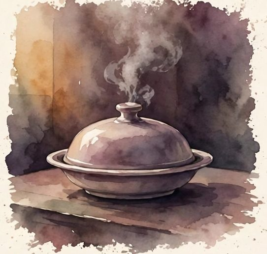
A covered dish on a table in a dim room, steam escaping at its rim.
Shame is the most inward of the messengers, and the hardest to seat at the desk, because its whole report is about being seen. The Signal Rooms read it as a fear with a specific object: not harm, not loss, but exposure — the dread of being seen as less than the company, less than the story told about oneself, less than the person one was supposed to turn out to be. It reports, accurately or not, a gap between the self that is presented and the self that is suspected, and it files that report in the dark, where gaps always look wider than they are.
Two questions govern the reading of shame at the Signal Desk. The first is whose eyes the feeling is afraid of — for shame always has an audience in mind, and the audience, examined, is often surprising: a voice from decades ago, a standard nobody current actually holds, a imagined room of judges who have long since left the building. The second question is what, exactly, is being hidden, because shame protects its object so fiercely that the object is often the last thing examined. Brought to the desk, it is frequently small, human, and shared by half the street: a failure, a need, an ignorance, a beginning made late.
The house does not argue with shame's arithmetic, because shame is not an argument; it is a flinch. It is answered the way flinches are answered — by discovering, gradually and in practice, that the feared seeing did not end anything. That work belongs to the next room. This room's work is only the reading, done thoroughly: the audience named, the hidden thing named, the gap measured in daylight rather than assumed at midnight. The register's shame entries are the shortest in the book, the Keeper notes, once they are finally written. The feelings were enormous. The facts, laid out in a steady hand, take three lines.
77Shame and the Hidden Room
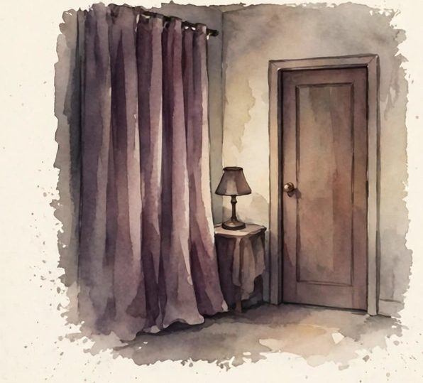
A small room with its door closed and its curtains drawn, one lamp unlit.
Every house in this hall's keeping has, somewhere in its plan, a room that is not shown to visitors. Shame is the feeling that keeps that room: it decides what goes in, it holds the key, and it conducts a quiet, exhausting campaign to make sure the rest of the household arranges its life around never opening the door in company. The Signal Rooms treat the hidden room as architecture rather than as disgrace. Almost every person has one. The interesting questions are what it costs to keep, and whether everything in it still needs to be there.
The cost is itemised in the register over years, and it is larger than visitors expect. The hidden room charges rent in avoided occasions — the invitation declined, the topic steered around, the help not asked for, the work not shown — and in the standing labour of the guard itself, which never sleeps. It also charges interest in a subtler currency: a person maintaining a sealed room cannot quite believe in the welcome they receive in the open ones, because the welcome was given, they feel, to the house with the door shut. Shame thus taxes precisely the company that would relieve it.
The Keeper's counsel is patient and, by the standards of advice, disappointingly undramatic. The door does not need to be opened to everyone, or all at once, or in the public rooms. It needs, over time, to be opened to someone — one trusted witness, one ordinary afternoon — and before that, opened by its owner, alone, lamp lit, to take the inventory the guard never allows. What is found there, in this desk's experience, is almost never what the dread described. It is a room of unfinished, unremarkable, human things, kept dark far past the point where darkness was protecting anything but the habit.
78Answering Shame with Light
If shame's element is darkness — the curtained room, the unspoken name, the story edited before it leaves the mouth — then its answer, in the practice of this house, is light. Not floodlights. The Signal Rooms are specific about the dose. Light, here, means seeing and being seen at a bearable brightness: the hidden thing said once, in plain words, to one safe witness; or written at the desk in the register's steady hand; or simply looked at by its owner without the usual flinch, in the morning, with tea. Shame does not survive accurate seeing at any brightness. It survives only the refusal to look.
The answer is never administered all at once, and the house regards forced exposure as shame's cruelty wearing a helper's coat. What is practised instead is a graded honesty, paced by the person themselves: the smallest sentence first, spoken where it is safest, and the discovery — made in the body, not in argument — that the world did not end. Then, in time, the next sentence. The register records these sentences without comment, and reading a year's entries in sequence shows the pattern the Keeper trusts more than any reassurance: the sentences get longer, the pauses between them shorter, the room they describe more ordinary with every telling.
Light also answers shame from the other direction: the room's second teaching. Much of what is hidden rests on a belief in its singularity — that no other house has this room. The Signal Desk, which holds a whole street's entries, can report the aggregate without betraying one: the hidden things are the commonest in the world. Failures, needs, beginnings, fears — the register is full of them, in every hand. A person who learns that their secret is the street's average has not been argued out of shame. The light has reached the corner where the singularity was stored, and the corner, lit, is a cupboard like anyone's.
79What Boredom Reports
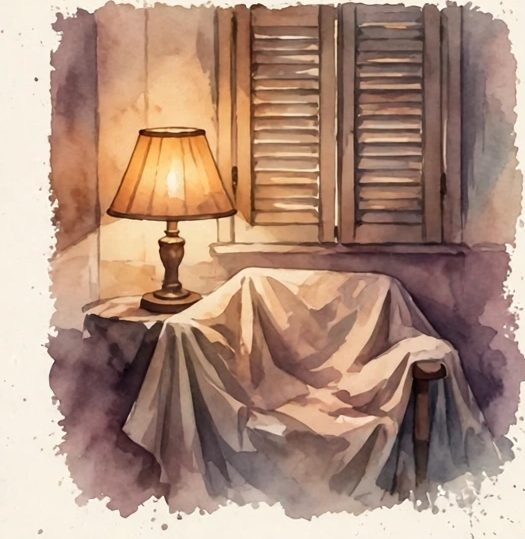
A lit lamp standing in a shuttered room, light falling across covered furniture.
Boredom is the messenger most often mistaken for a verdict on the world — the day is dull, the work is dull, the town is dull — and the Signal Rooms begin by returning the report to its correct address. Boredom is information about a fit, or rather about a misfit: between a person's strength and the use currently being made of it. It reports that capacity is idling. The mind, built for a certain weight of problem and a certain pitch of interest, is being fed below its measure, and boredom is the sound of the engine racing with the wheels off the ground.
Read this way, boredom is nearly a compliment the self pays itself: evidence of an unused margin. The Keeper's register distinguishes it carefully from tiredness, which asks for rest, and from sadness, which reports a loss — boredom is neither depleted nor grieving. It is underfed, and it is remarkably honest about the menu it wants: more difficulty, more novelty, more consequence, more of the material that engages the particular strength going spare. This is why boredom so often arrives in comfortable lives and well-run routines. The arrangements are not failing. They are simply smaller than the person arranged inside them.
The house warns against boredom's two counterfeits. The first is the boredom that is really avoidance — a strength idling not because no task fits it, but because the fitting task is frightening, and dullness is a safer complaint than fear. The second is the boredom that is really grief for a former, larger life, which belongs in the sadness corridor and will not be answered by novelty. Both are common; the desk asks its sorting questions of every entry. But when the report is clean, its message is the most actionable in the building, and the next room takes up the answer: a strength, named, looking for its work.
80Boredom and the Unused Strength
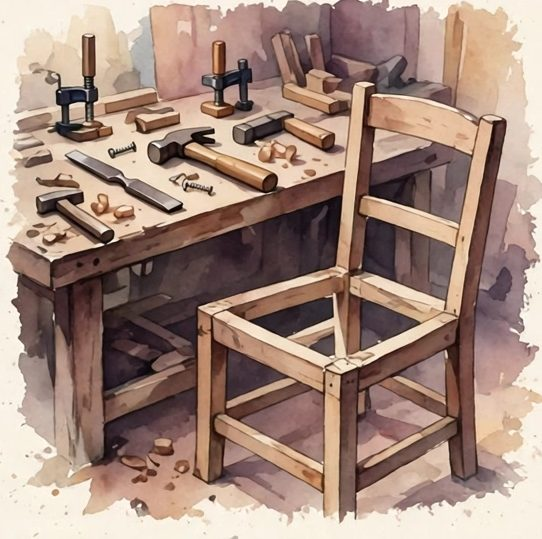
A workshop bench with tools laid down mid-task, a half-built chair beside it.
The last room of the corridor, and of this section of the hall, is a working room, because boredom's message completes itself only in use. The doctrine is plain: a strength that is not used does not rest quietly in storage. It turns. It becomes the restlessness that shops, scrolls, picks arguments, and renovates harmless arrangements at midnight — the same energy that, given its proper task, would have been called enthusiasm. The Signal Rooms therefore read boredom's register entries as a workforce report. Somewhere in the household, a capability is standing idle at the bench, and the house is paying for its idleness in static.
Finding the strength is a matter of reading backwards from the boredom itself. The Keeper asks where the feeling is absent — the hours that never drag are the register's best evidence, because time flies only where a strength is engaged — and where, in memory, it was absent for whole seasons. A person usually knows, once the question is put this way, exactly which tool has been hanging unused: the making hands, the mathematical head, the gift for company, the appetite for difficulty. The boredom was never about the dull afternoon. It was the tool, reporting for duty to an empty bench, day after day, with increasing volume.
The answer prescribed is deliberately ungrand. Not a new life, not a resignation letter written in a blaze — a task, sized honestly to the strength, begun. The half-built chair is the corridor's emblem: work interrupted is still work begun, and a strength re-engaged briefly changes the register's weather for days. The Keeper closes the entry without triumph. Another messenger has been heard, read, and answered at the scale the day allowed. That is the method of this house, and the dreaded corridor ends as the others do: with an entry written, a lamp trimmed, and a household better informed about itself than it was that morning.
81Guilt, the Precise Cousin
Guilt is the precise cousin in this family of signals, narrower than shame and more exact in its bookkeeping. Where shame speaks of the whole person, guilt speaks of one act: this was done, or left undone, and it can usually name the hour. The Keeper treats it as the most literate of the difficult signals, the one that arrives with its own particulars already written out, needing only to be read in full and then answered in kind — an apology, a repair, an account settled where settling is possible.
The precision is worth respecting rather than fearing. A message that names a specific act points at a specific response, and a specific response can actually be made, which is more than can be said for the vaguer weather of self-reproach. The house advises listening to guilt the way the desk listens to a well-written letter: once, carefully, with the whole of its content taken in, and then a reply composed in the same plain terms, addressed to the act and not to the worth of the person who did it.
What guilt does not ask, in this house, is to be kept. It is a signal that completes itself in being answered; left unanswered it returns, and returns again, each time a little less precise and a little more like its vaguer cousin. The register therefore has a short column for it: the act, the answer, the date the account was closed. Few entries in the book are as satisfying to close, and few closures are as plain. Guilt heard promptly is a messenger dismissed with thanks; guilt stored is a debt the house never owed.
82The Signal Beneath the Signal
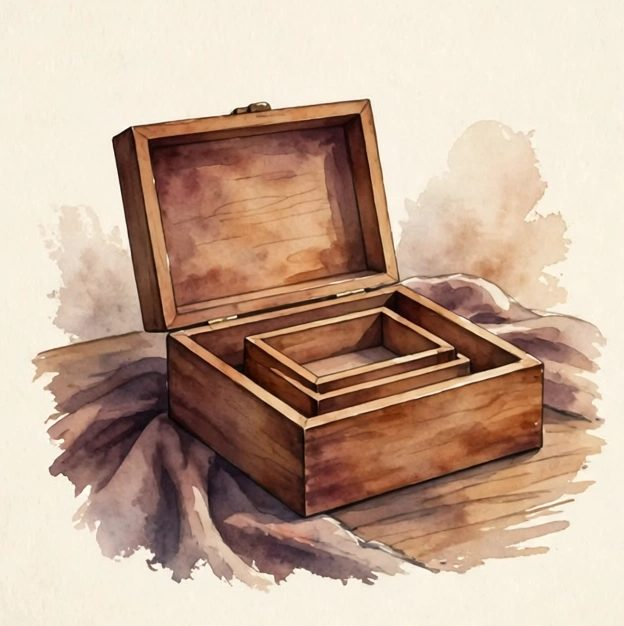
A set of nested wooden boxes opened one inside another on a table.
Some messages arrive folded inside other messages, the way the smallest of the nested boxes waits inside all the rest. Anger opens to show tiredness. Envy opens to show admiration that has not found its manners. A flat, grey boredom opens to show a grief that has not been given its name. The Keeper has learned to open the boxes at the desk rather than at the door, in lamplight, without hurry, because the signal beneath the signal is usually the one that was actually sent.
This is not a trick and the house does not treat it as one. Feelings are not always mislabelled; a great many arrive correctly addressed and plainly written. But when a signal seems too large for its occasion, or keeps returning after its apparent errand is done, the second reading is worth the time. The question is simple and unaccusing: what is under this. Asked at the desk, in writing, it answers more often than it refuses, and the answer almost always lowers the volume of the whole room.
The practice asks for a light hand. To go digging beneath every feeling as a matter of policy would be its own kind of deafness, a refusal to take any message at its word. The house opens the second box only when the first one does not settle the matter, and accepts what it finds there without staging a revelation. Most often it is something modest: a need for rest, an old disappointment, a hope that had not been consulted. Modest things, entered honestly, end more arguments than grand ones.
83Reading the Difficult Three Twice
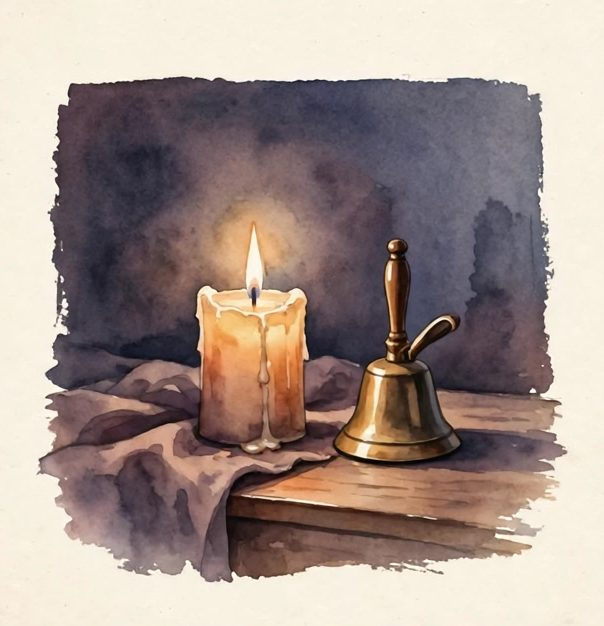
A candle and a small bell side by side on a desk at evening.
Envy, shame, and boredom are the three signals this house reads twice — once when they arrive, and once again later, in cooler light, before any answer is composed. The first reading is unreliable by nature: envy sounds like contempt, shame sounds like fact, boredom sounds like nothing at all. The second reading, given a meal and a night's distance, finds the wanting inside the envy, the fear inside the shame, and the unused strength waiting inside the boredom like a tool on a shelf.
The rule of two readings costs little and prevents much. A message answered on its first reading is answered at the volume it arrived with, which for the difficult three is nearly always the wrong volume — too sharp from envy, too final from shame, too dismissive of boredom's plain request for worthier work. Held overnight at the desk, none of the three grows worse for waiting. They are signals, not fires; they keep. And in the keeping they become readable, which is all the house ever asks of a feeling before it replies.
The Keeper keeps a small ritual for the second reading: the candle lit, the bell silent, the register open at the page where the three were entered. Nothing about the ritual is necessary, and the Keeper would be the first to say so. But a marked pause has a way of reminding the reader that the message is the same and the light is different, and that the difference is the reader's own doing — the one variable in the whole exchange that was always within reach.
84The Register of Hard Messages
At the end of the difficult hall, the Keeper enters the week's hard messages in the register: the envy that named a wanting at last, the shame that turned out to be a fear of one particular pair of eyes, the boredom that was a strong back asking for a worthier load. The entries are made in the same hand as the bright hours. The house insists on this. A register that records only the welcome messages would be a fair-weather instrument, and feelings are not fair-weather traffic.
Read back over a season, the hard pages teach the most. They show the same three signals returning on a rhythm, tied to particular rooms of a life — the comparison that always follows certain visits, the shame that gathers around particular work, the boredom that keeps office hours. A pattern entered honestly is information of the highest grade the house handles, because a pattern can be prepared for, and preparation is most of what calm consists of. The feeling still arrives; it simply arrives at a desk that has seen its handwriting before.
Nothing in these pages is underlined in judgement or softened in the retelling. The Keeper's rule for the register is the rule for the whole house: describe, do not grade. What the difficult three reported is set down as reported, what was answered is set down as answered, and the rest is left in pencil, as all honest forecasts are. The book is closed on the hard hall without ceremony, and the lamp is carried on toward the rooms where hearing turns, at last, into the question of what to do.
85Hearing Without Obeying
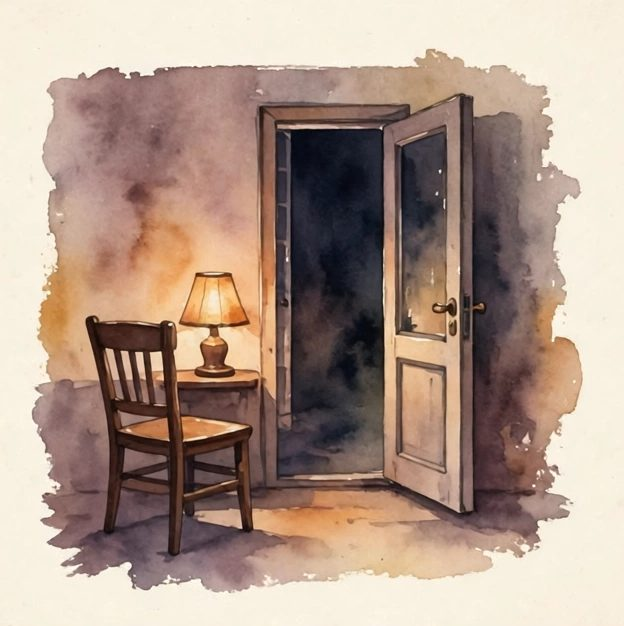
An open door with a chair turned toward it, a lamp lit between them.
This hall is the hinge of the house, and its whole doctrine fits in its title. To hear a feeling without obeying it is to give the message a full reading and a separate decision: the anger is heard, and the reply is composed by the person, not by the anger; the fear is heard, and the step is taken or not taken on the evidence, not on the volume. Between the hearing and the doing the house keeps a chair turned toward the door, a lamp lit, and all the time the message honestly requires.
Neither half of the practice works alone. Hearing without the second half becomes a house that receives every messenger and acts on every message — driven by weather, generous and exhausted. Obeying nothing, hearing nothing, becomes the locked room of an earlier hall, calm on its face and costly underneath. The hinge holds because both movements are kept: the door opens for every signal, and the house keeps its own counsel about what the signal asks. Listened to, not driven by — the phrase on the door is a description of furniture as much as of conduct.
Visitors sometimes ask whether the distinction can survive a genuinely loud feeling, and the house answers plainly: not always, and not at once, and the failures are entered in the register like everything else. The practice is not a lock that holds every time. It is a habit that holds more often the longer it is kept, the way a path across a yard deepens with use. What the house promises is only that the chair stays turned toward the door, so that hearing remains possible even on the days when obeying, or refusing, went less well than intended.
86The Pause Between Signal and Step
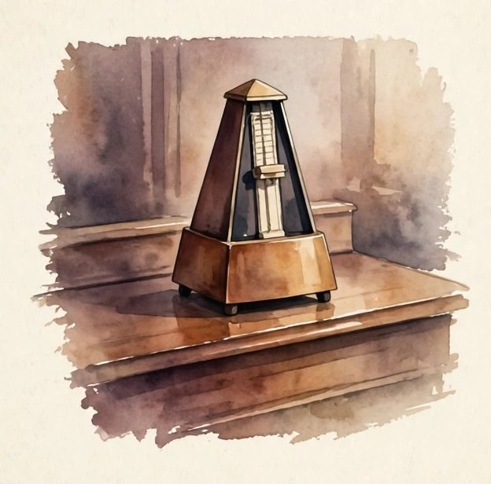
A metronome resting still on a piano top in a quiet room.
Between a signal and a step the house keeps a pause, the way a metronome rests between beats without the music being over. The pause is not hesitation and it is not doubt about the feeling. It is the interval in which the message finishes arriving — all of it, including the quieter second sentence that loud feelings tend to add once their first shout is spent. Steps taken inside the first sentence are steps taken on partial information, and partial information is the one cargo this house refuses to ship.
The length of the pause is not fixed, and the Keeper distrusts any rule that would fix it. Some messages need a breath; some need a night; a few, the great griefs and the great angers, need a season at the desk before their errand is fully known. What the pause must never be is skipped while pretending it happened. The register has a way of exposing that: an answer dated the same minute as its message, in a hand that shakes a little on the page, tells its own story to anyone who reads it back in a calmer month.
Practised over years, the pause changes its nature. It stops feeling like a delay imposed on life and starts feeling like the part of life where life is actually decided — the still point between the bell and the answer where the whole of a person is present. Visitors leave with many impressions of this house, but the ones who write back to the desk mention the pause most often. Not the doctrine, not the registers. The small, kept silence in which a feeling was heard completely and a step was chosen, rather than taken by the weather.
87Asking What It Came to Say
Of all the questions the house teaches, this is the one the Keeper would keep if only one could be kept: what did it come to say. Asked of anger, it finds the boundary. Asked of fear, it finds the valued thing standing in harm's way. Asked of the flat grey signals that seem to say nothing, it finds, often enough, the small true sentence they were carrying under their coats — I am tired, I am lonely, I am not finished with that loss. The question works because it presumes the feeling has an errand, and most feelings, treated as messengers, behave like messengers.
The asking has a manner as well as a wording. It is done at the desk, not at the door; in writing, when the feeling is loud; and once, fully, rather than in anxious repetition. A messenger questioned six times gives six answers, most of them invented to end the questioning. Asked once and heard to the end, the same messenger usually delivers the plain version and is content to leave. The register is full of single sentences that cost less, in the end, than the weeks of weather that preceded them.
There are days when the question returns no answer, and the house records those too, without embarrassment. Not every feeling has finished composing its message when it arrives; some are early drafts, and the correct response to an early draft is to let it stay at the desk until it knows its own mind. Asking what it came to say is therefore a standing invitation rather than a demand, renewed each time the signal repeats. A feeling that is asked, and asked kindly, seldom needs to raise its voice to be heard the next time.
88Answering a Feeling in Words
A letter resting on a desk beside a cooling cup of tea, abstract marks only.
A feeling that has been heard and read still waits for one more thing: an answer, in words, addressed to what it reported. The answer is rarely dramatic. To anger it says: the line will be kept, and here is how. To fear: the evidence has been checked, and here is what it showed. To sadness: the loss is real, and it will be carried at walking pace. The words matter less for their eloquence than for their existence — a message answered stops circling the house and knocking.
The house keeps the answers short on purpose. A long answer to a feeling is usually an argument, and an argument with a messenger delays the only thing the messenger wants, which is delivery confirmed. One or two true sentences, entered in the register under the message they reply to, close more accounts in a month than pages of inner negotiation close in a year. Where no answer can yet be honest, the desk sends a holding reply instead: heard, entered, not yet decided. Even that, visitors report, lowers the knocking considerably.
Answering in words also draws the line the whole hall stands on. The feeling speaks; the person answers. The order of speakers is the order of authority in the house, and it is never reversed for long without the weather taking over the rooms. A person who answers their feelings — calmly, in sentences, on the record — is not a person without weather. They are a person whose weather gets a hearing and a reply, in that order, and the register shows the correspondence running both ways, which is the whole of the teaching in a single image.
89When the Message Is Old News
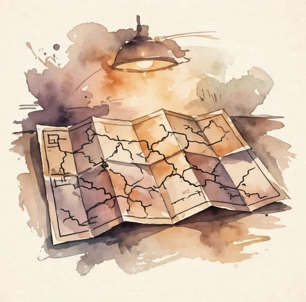
A much-folded map spread flat on a table under a lamp, abstract marks only.
Some messages arriving at the door are old news in a fresh envelope: the anger that belongs to a room left years ago, the fear that guards a door long since opened, the shame folded and refolded until its map of the world no longer matches the country outside. The house reads these with the same courtesy as any other signal — and then checks the date, which is the step the title of the next hall will make into a practice. A true message about a finished chapter asks for filing, not for action.
Old news is not false news, and the distinction keeps the house honest. The feeling is real; the feeling is felt; its report about the past may even be accurate in every detail. What has expired is its authority over the present arrangements. The Keeper keeps such messages in the register with their dates shown plainly, the way old letters are kept in the basket on the shelf — honoured as part of the correspondence of a life, and no longer answered as if they had arrived this morning with this morning's instructions inside.
Telling old news from new is harder in the moment than in the register, because a feeling carries no visible postmark. The desk's tests are plain ones. Has this exact message arrived before, in this exact wording, about a room no longer lived in. Does the errand it names still exist in the present tense. Would the answer it asks for change anything that is still changeable. Answered honestly, the three questions sort most of the post correctly — and what remains, the present grief inside the old envelope, is read as the new message it is.
90Feelings in Company
Signals do not stop at the skin, and a house that reads its own feelings learns quickly that other people's feelings are arriving in the same rooms, with the same kind of errands. The practice of this hall travels. Anger across a table is read for its boundary before it is answered for its tone. Fear in a friend's voice is asked, gently, what it is guarding. The reading is offered, never imposed; another person's message is theirs to open, and the house's courtesy at other doors is the same as at its own — knock, wait, be invited.
Company changes the handling in one respect worth entering plainly. A feeling of one's own can be left at the desk overnight; a feeling shared in company often asks for a first response in the moment, and the honest first response is usually a hearing rather than a verdict. I can see that this matters, said plainly, delivers more than any instant judgement, because it confirms the delivery without signing for contents not yet examined. The fuller reading can follow at walking pace, the way the house reads everything.
The long reward of this practice is a particular quality of company: rooms in which feelings can arrive without either ruling the evening or being shown the door. Visitors who have lived in such rooms describe them the same way the Keeper describes this house — not calm, exactly, since weather comes to every address, but readable. Signals rise, are heard, are answered in words, and subside into the register of an ordinary shared life. It is not a small thing to build. The house rates it among the largest things its doctrine produces.
The Signal Desk
One desk receives all correspondence for this house — questions, corrections, and word of any feeling a visitor has been carrying unread for a long while: the anger that keeps arriving with the same news, the fear that will not state its evidence, the signal they are only just learning to read. It is read in the order it arrives, and entered in the register of signals.
91The Self as First Listener
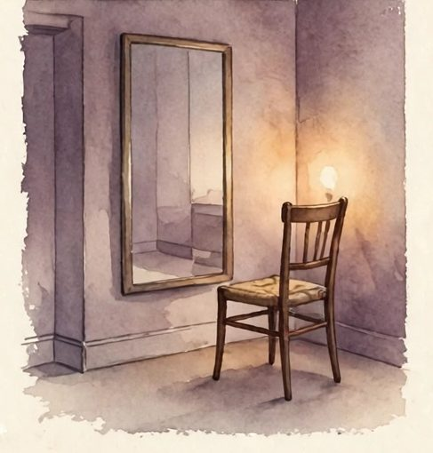
A single chair before a mirror in an otherwise empty lamplit room.
Before any other listener can be expected to read a feeling well, the house assigns the post to the person nearest the door: the self. The self is the first listener of every signal it receives, the one who decides in the first minute whether the messenger will be heard, argued with, obeyed, or turned away unread. Most of the doctrine in these rooms is, in the end, a description of that first minute practised carefully — the chair kept by the door, the lamp lit at the right height, the register within reach.
Being one's own first listener is a skill with a visible shape. It notices the arrival before the content, the way a doorkeeper hears the bell before reading the note. It allows the whole message onto the page before drafting any reply. And it keeps the replies honest in a way no outside listener can enforce, because the register is private and nothing in it need perform for anyone. The Keeper notes that people who keep faith with their own register tend to need less volume from the world; the signals stop shouting once they trust the door.
The chair before the mirror is the emblem of this hall because the arrangement is admittedly strange: the same person sends the message and receives it, feels the weather and reads the barometer. The house finds nothing impossible in this. It is the ordinary condition of a life, and the only choice it offers is whether the receiving will be done well or badly, at a desk or in a doorway, in lamplight or in the dark. The first listener sets that standard for every listener who follows.
92Habits of the Careful Reader
A well-kept register open on a desk with a ruler and a sharpened pencil.
The careful reader of feelings is not born with better weather; the difference is in the habits, and the habits are plain enough to list. Signals are entered the day they arrive, while their wording is still exact. Loud messages are read twice, quiet ones are asked after. The date is checked before the errand is obeyed. Answers are given in words, briefly, and recorded under the messages they answer. The register is read back at the week's end, not for judgement, but the way a gardener walks the rows — to see what is actually growing.
None of these habits requires an occasion. That is their strength. A practice that waits for a crisis to begin will begin badly, in the dark, with the rain already inside the door. Kept on ordinary days, on small signals — the mild irritation, the passing gladness, the boredom of a wet afternoon — the habits are strong before they are needed, and the great messages, when they come, are met by a desk that knows its own procedures. The house teaches reading on the small post precisely so the large post can be handled.
The Keeper adds one habit that visitors sometimes overlook because it looks like idleness: the register is also closed. There are evenings when the desk is deliberately not attended, when signals are allowed to wait in the basket unopened until morning, because a reader who never rests reads badly. The habits of the careful reader include the habit of stopping, and the book, left shut under its ribbon at a decent hour, is as much a part of the doctrine as any entry written in it. Rest is the binding of the register; without it the pages come loose.
93A Life with Room for Signals
A life with room for signals is not a life arranged around feelings, any more than a house with a porch is arranged around the weather. It is a life with a porch — a place at the edge of the day where messages can arrive, be received, and be dealt with without flooding the inner rooms. Work proceeds, meals are cooked, promises are kept, and the signals come and go across the porch like callers who know the house's customs: they will be heard, they will be answered, and they will not be moving into the front room.
Building the porch is mostly a matter of margin. Time left unfilled at the day's joints, so a message can be read when it arrives rather than queued behind exhaustion. A page kept for the purpose. A walk that serves as the second reading. Small structures, honestly kept, and their effect is out of proportion to their size, because most mishandled feelings in the register were not mishandled from cruelty or folly — they were mishandled in a doorway, in a hurry, by a person with no bench to set them on.
The house takes the porch as its measure of a life's design. Not the size of its rooms or the calm of its climate, but whether arrivals have somewhere to land. A life so built can receive bad news without the news taking the whole house, and good news without immediately spending it. The signals keep their proper rank: honoured guests, faithfully answered, and the life — the actual living of it — keeps the inner rooms, in the order the house has always intended.
94Signals, Worn Lightly
A light coat hung on a hook by the door, ready for ordinary weather.
There is a stage in the practice, years in for most keepers of registers, when the signals begin to be worn lightly — the way a coat is worn in changeable weather, put on for the rain and hung up again in the sun without commentary. The feelings still arrive at full strength when their news is full-sized. Nothing has been numbed and nothing refused. What has changed is the fit: a signal is something a person has, for a while, the way weather is had, and is neither a uniform nor a definition.
Worn lightly does not mean held loosely in the sense of cared about less. The register of a light wearer is as careful as any in the house; the messages are read whole and answered in words. The lightness is in the carrying afterward. An answered feeling, filed under its date, does not trail its owner from room to room demanding to be re-read at every threshold. It stays in the book. The owner stays in the day. Each is where it belongs, and the house counts this separation among the plainest freedoms its doctrine can describe.
Visitors ask whether lightness can be practised directly, and the Keeper answers honestly that it cannot — it is a result, not a technique. It arrives the way ease at any craft arrives, after the habits have been kept long enough to become furniture. What can be practised is everything in the previous rooms: the hearing, the pause, the question, the answer in words, the register closed at a decent hour. Lightness is what those habits feel like from the inside once they no longer need to be remembered. The coat is on its hook by the door.
95The Years as Messages in One House
A house at evening with every window lit, seen across a calm garden.
Read from the far end of a life, the years themselves begin to look like messages delivered to one address in sequence: the year that reported, unmistakably, that a road had ended; the year whose joy kept pointing at the work that would become the life's work; the hard year whose fear, read late, was guarding exactly the thing that was saved. The register of a long life is a correspondence, and its later volumes cannot be understood without the earlier ones, which is why the house keeps them all, bound alike.
The long view softens nothing and it hardens nothing; it places. A signal that dominated a season shrinks, in the bound volumes, to its true size — sometimes three pages, sometimes a single line — and a quiet signal, barely entered at the time, is found to have been carrying the news the next decade ran on. The Keeper reads the old volumes the way the volumes ask to be read: for the pattern of what was reported, what was heard, what was answered, and what the answers built. It is the closest thing this house has to a philosophy of a life.
What the correspondence shows, above all, is continuity of address. The feelings of a life change their handwriting, their volume, their errands; the house they arrive at remains, kept by the same reader, whose one long task has been to receive them better each year than the year before. Every window lit at evening is the picture of it: a whole life inhabited, room by room, with the weather read at the door and the lamps lit inside. Nothing excluded. Nothing in charge that arrived by post.
96The Life and Its Feelings Share One Roof
The hall closes on the arrangement the whole house was built to describe: a life and its feelings sharing one roof, neither evicted and neither enthroned. The feelings keep the porch and the register; the life keeps the inner rooms; the Keeper walks between them with the lamp, and the traffic is constant and ordinary. No visitor should leave expecting a life without weather, or a house where the post has stopped. The post does not stop. The roof simply holds, because the receiving was built properly.
Sharing a roof is a plainer and stronger phrase than the ones usually offered for this arrangement, and the house chose it for its plainness. It does not promise harmony as a permanent condition, only cohabitation under terms that work: every signal heard, no signal obeyed on arrival, answers given in words, the register kept and closed in turn. Under those terms the loud years and the quiet years alike remain habitable, which is the whole test the house applies to its own doctrine.
The last entry of the hall is therefore a household note rather than a farewell. Keep the chair by the door. Keep the pencil sharp and the ribbon for closing time. Read the small post daily and the large post twice. Answer in sentences. And when the steps of the next hall are reached, they will be found to be nothing new — only the arrangements of this house written out as a numbered path, for visitors who prefer their doctrine as a walk. The lamp moves on ahead of the reader, as it has through every hall.
97Step One: Stop at the Signal
A red flag planted at the edge of a path in still air.
The first step is the smallest and the one all the others stand on: when a feeling arrives, stop. Not for long, and not as a performance — for the length of one honest breath at the door, while the message is still a message and has not yet become a motion. Most mishandled feelings in the register were not mishandled cruelly or foolishly; they were handled at walking speed, mid-stride, by a person who never actually stopped to receive what had arrived. The stop is the receiving. Everything else in the steps is commentary.
Stopping has a posture the house can describe. The errand in hand is set down, actually or in intention. The signal is allowed its first full sentence. No reply is drafted during that sentence — not the defence, not the joke that would shrink it, not the agreement that would end the discomfort of listening. One sentence, heard whole, costs almost nothing; and yet a surprising amount of a life is decided in exactly that space, between the bell and the first word, where the message is still information and the step is still a choice.
The Keeper is honest about the step's failure rate. It will be skipped daily, by everyone, including the keepers of registers, most often for the loudest arrivals, which are the ones that need it most. The remedy entered in the book is unfashionable and effective: when the stop is noticed to have been skipped, it is taken then, late, at the desk, with the message re-read from the beginning. A late stop is worth more than an elegant excuse. The flag at the path's edge does not move; it only asks to be seen.
98Step Two: Name It in Plain Words
A bell, a pencil, and a blank card resting together on a desk.
The second step puts a name on the card: one feeling, in plain words, written down. Not a paragraph and not a verdict — a name. Anger. Fear. Sadness. Envy. The plainness matters, because a signal named grandly is already half an argument, and a signal named vaguely will spend the day pretending to be three other things. The register's experience is uniform on this point: a feeling that has been named accurately grows quieter, not because the naming is a spell, but because a messenger who has been correctly identified stops needing to prove the delivery.
Naming is a skill with its own small disciplines. The name is taken from the feeling's report, not from its volume — the loudest element in the room is not always the sender. Two feelings present at once are given two cards, since a shared card makes both illegible. And the name is written in pencil, in the house's custom, because a first naming is a draft; by the second reading the fear may show itself as grief, and the card should be correctable without ceremony. Precision improves with honesty, and honesty improves with practice.
Visitors sometimes resist the step as too simple to matter, and the desk answers with the register itself: page after page in which the only difference between a hard week and a manageable one is a card, correctly filled in, dated, and waiting on the desk. Naming does not solve, excuse, explain, or end anything. It addresses the envelope. But a house that cannot address its post cannot answer it either, and every later step in this hall quietly assumes the card was written.
99Step Three: Ask What Crossed, What Is Missing
With the feeling named, the third step asks after its errand in the house's standard form: what has been crossed, and what is missing. The two questions between them cover most of the post. Anger usually answers the first — a line, a limit, a promise. Sadness, fear, and boredom usually answer the second — a person, a safety, a use for one's strength. Joy reverses the form and reports what was found instead, which is why the desk counts it as the same step taken in sunlight.
The questions are asked in writing, at the desk, and their answers are kept short enough to be believed. A boundary crossed can be stated in a sentence; a sentence that requires three pages is usually a history, and histories, however true, are not errands. What is missing, likewise, fits in a line when it has been honestly found: rest, an apology, a closed door acknowledged as closed. The brevity is not a lack of respect for complexity. It is the shape information takes when it is ready to be acted on rather than merely survived.
Some messages answer neither question on the first asking, and the step provides for them: the card is left in the basket and the questions are renewed when the signal repeats, as it faithfully will. A feeling whose errand cannot yet be stated is not dismissed as noise. It is treated as a letter in a hand not yet familiar, to be read again in better light. The register shows that most such cards are filled within the week — a small patience that has saved this house more trouble than any of its grander doctrines.
100Step Four: Check the Date on the Message
An old envelope yellowed with age resting under a paperweight, abstract marks only.
The fourth step turns the envelope over and checks the date. Feelings are faithful couriers and careless historians; a message can be delivered with full conviction years after the room it describes was vacated. The check is made with the desk's plain questions. Is this errand still standing in the present tense. Has the door it guards been opened long since, the boundary it defends been moved by agreement, the loss it reports been grieved and entered. If the date is old, the message is filed with honour — and without obedience.
Checking the date is the step most often accused of being a way to dismiss feelings, and the house answers the charge carefully, because the truth is the opposite. Nothing in the step denies the feeling, which is present and real and gets its entry in the register like any other. What the date governs is the reply. Old grief asking for a lamp in a window gets a lamp in a window. Old grief asking to rearrange the furniture of the present gets a hearing, a dated entry, and a courteous refusal — the two responses the house keeps most carefully distinct.
The Keeper notes that new messages also pass through this step and are the better for it, since a date confirmed as today's gives an answer its full authority. There is no hesitation in the register over a boundary crossed this morning, a loss still warm, a value touched an hour ago. The step does not slow the post; it sorts it. And sorted post, in this house, is the difference between a life spent answering everything that ever arrived and a life spent answering what has actually been sent.
101Step Five: Answer the Need, Not the Noise
A table with a covered dish, a jug of water, and an empty chair pulled close.
The fifth step separates the need inside a feeling from the noise around it, and answers the need. The noise is real enough — the raised voice of anger, the imaginings fear sends ahead of itself, the general weather a strong feeling generates in a household. But a reply addressed to the noise only makes more of it. Underneath, the need is usually plain and surprisingly modest: a boundary restated calmly, a fact checked, an hour of rest, a loss acknowledged aloud. The desk's craft is to find that sentence and answer it, directly, in words or in deed.
Answering the need does not mean granting every form the need arrives in. Anger may report a true boundary and demand a slammed door; the house answers the boundary and declines the door. Fear may report a genuine risk and demand that a whole life be rearranged around it; the house checks the risk and answers with proportion. The distinction is the whole of the step: the message is honoured, the messenger's volume is not treated as instructions. What is answered is the report, in the size the report actually supports.
Visitors find this step quietly difficult, because noise is vivid and needs are quiet, and the vivid thing generally gets the reply. The register's counterweight is written at the top of the step's page: what would I answer if this had arrived as a letter. Read as a letter, anger's boundary and fear's warning stand out in their own lines, and the shouting turns out to have been mostly punctuation. The house has no wish to remove the punctuation from human life. It merely refuses to let punctuation draft the reply.
102Step Six: Put It in Writing at the Desk
The sixth step moves the message from the doorway to the desk: it is written down. The sentence need not be fine. Date, feeling, errand, answer — the register's four columns hold most of what a person needs to know about their own weather, and they hold it still, which is the quality feelings in motion most conspicuously lack. A feeling on paper stops circling. It can be read twice at different hours, compared with last month's entry in the same hand, and answered when the reader is ready rather than when the volume demands.
Writing performs a second service the house values as highly: it separates the report from the reporter. On the page, it becomes possible to see that the anger was accurate about the boundary and extravagant about the culprit, that the fear was right about the stakes and wrong about the odds. In the head, message and messenger arrive fused, and to doubt any part is to feel one is refusing the whole. The desk's columns break the fusion kindly, line by line, and leave the true parts standing with their authority intact.
The Keeper is often asked whether the register must be kept forever, and answers that it must not even be kept well — only kept. A page a week, honestly filled, teaches more than a daily volume kept for show, and a register abandoned in a busy month can be resumed without apology, the way any honest book is resumed. The step's only unforgiving element is sequence: the writing comes before the answer whenever the feeling is large, because large feelings answered unwritten have a way of being answered twice — once in haste, and once in repair.
103Step Seven: Let the Loudest Wait Its Turn
A notebook left open at a desk with a blank page held in lamplight, abstract marks only.
The seventh step governs a queue. When several feelings arrive together — as they prefer to, in the doorway of a difficult day — the loudest is not served first by right of volume. It is entered, acknowledged, and asked to wait its turn behind a plain order of business: what is today's, what is actionable, what is largest once read rather than heard. The house borrowed the rule from every well-kept desk it has ever seen. A queue is not a refusal. It is how a single reader serves many messengers without being stampeded by the most theatrical of them.
Waiting changes the loudest arrivals in a way visitors consistently underestimate. Anger asked to wait while fear is read often discovers, in the waiting, that it was fear's echo. A grief that queues behind an afternoon's ordinary business arrives at the desk at dusk with its errand already half-composed. The signals do not resent the queue; resentment belongs to messengers who suspect they will never be called. In this house the register guarantees the call. Every entry is answered or consciously filed, and the feelings, if the metaphor may be allowed, have learned to trust the system.
The step also protects the quiet arrivals, which are its second purpose. Calm, contentment, the mild signal of enough — these never push to the front, and in a house ruled by volume they would never be read at all. Under the queue they take their turns like everyone else, entered in the same columns, and the register is the richer for their evidence. A reader who only ever hears the loud post ends with a distorted map of their own country. The queue is how the map stays true.
104Step Eight: Read the Body's Register
A row of bottles and jars along a shelf in lamplight, each a different shape.
The eighth step consults the body's own register, which is kept earlier and less politely than the desk's. Shoulders report before sentences do; sleep enters its figures nightly without being asked; appetite, temper, and the jaw at midnight all file their returns. The house does not treat these entries as a separate language to be mastered. It treats them as the same post arriving by a second route — the tiredness under the anger, the ungrieved loss under the sleepless week — and reads the two registers together before answering either.
The body's entries have one great virtue: they cannot be edited in the telling. A person can compose a brave account of a month at the desk, but the register of broken nights and clenched hands files its own version, and the discrepancy between the two is itself information of a high grade. The Keeper reads discrepancies without accusation. They are not evidence of dishonesty; they are the ordinary gap between a message and its summary, and the step exists so the original gets read, not only the summary.
Practical care follows from the reading as naturally as any answer in this hall. A body reporting exhaustion underneath a week's anger gets rest before the anger is answered. A body reporting a long, flat quiet underneath the boredom gets company or work worth its strength. The house phrases these as readings, not remedies — it sells nothing and promises nothing, here as everywhere — but a register honestly read has a way of making the next right act plain, and plainness, in this house, is nine-tenths of wisdom.
105Step Nine: Thank the Messenger
The ninth step will seem ornamental until it has been tried: when a feeling has been heard, read, and answered, it is thanked. Not praised, not celebrated — thanked, plainly, the way a house thanks any messenger who came through bad weather with the post intact. Thank you for the report. The line was crossed and now it is kept. The risk was real and now it is known. The form is brief and slightly stiff, and the Keeper recommends the stiffness; gratitude performed becomes theatre, while gratitude entered in the register stays honest.
The reason for the step is practical before it is gracious. Feelings that are thanked stop escalating. A messenger who has been received, read, answered, and thanked has no further errand at the door, and the register shows the difference in plain ink: thanked signals return at lower volume and longer intervals, carrying smaller news. The house does not claim this as a law of anything. It reports it as the observed custom of its own correspondence, kept over many years and many weathers, and leaves the reader to test it at their own desk.
Thanks also settles the reader's side of the account. An unthanked answer can curdle, in the doing, into resentment at having been put to the trouble — as if the feeling had arrived out of malice rather than duty. The small formal sentence at the end of the entry prevents that particular corrosion. It records that the message was wanted, even when its news was not. Few pages in the register do more work per word, and none of them costs less to write.
The Signal Desk
One desk receives all correspondence for this house — questions, corrections, and word of any feeling a visitor has been carrying unread for a long while: the anger that keeps arriving with the same news, the fear that will not state its evidence, the signal they are only just learning to read. It is read in the order it arrives, and entered in the register of signals.
106Step Ten: Leave One Signal Unanswered Tonight
A large bell hanging silent in a tower above a quiet village at dusk.
The tenth step is a deliberate omission: tonight, one signal is left unanswered. Not the urgent one, not the one whose errand expires at midnight — the house is not theatrical about risk — but one of the queue of ordinary messages that could be answered and will still be there, unchanged, in the morning. It is left in the basket, entered and unanswered, while the register is closed and the lamp is lowered. The step exists to teach the reader, in the body and not in theory, that an unanswered message is not an emergency.
The lesson is needed because answering can become its own compulsion, a way of never being quite finished with the day's weather, of keeping the desk lit into hours that belong to sleep and other people. A reader who must clear the basket nightly is, in the house's plain way of putting it, being driven by the post while believing they are reading it. The one unanswered signal breaks that arrangement gently, from inside, at a dose small enough to be safe and large enough to be believed by morning.
What the morning usually shows is entered in the register with something like gratitude: the signal waited. It did not grow teeth in the night, summon reinforcements, or spoil. It sat in the basket like a letter, because a letter is what it always was. Keepers report that after some weeks of the step, the whole queue relaxes — messages arrive more quietly at a desk that is known to close. The bell hangs silent above the village, not broken, not silenced forever. Rested, and therefore worth hearing when it rings.
107Step Eleven: Let Reading Change the Answer
A desk at evening with two registers side by side, one old and one new.
The eleventh step guards against a subtle failure: reading everything and changing nothing. It happens at careful desks. The feeling is heard, named, dated, entered — and then the answer issued is the same answer that would have been given at the door in the first minute, before any of the work was done. The reading has been performed rather than used. The step therefore asks one blunt question before an answer is sent: what in this reply is different because the message was read. If nothing is different, the reading is not finished.
Changed answers are usually smaller answers. The read anger produces a boundary restated once, clearly, instead of a general storm. The read fear produces one checked fact and one proportionate precaution instead of a season of vigilance. The read grief produces an hour set aside instead of a life rearranged. Again and again the register shows the same proportion: the longer the reading, the shorter the answer, because information displaces volume. A reply drafted in the doorway needs size to feel sufficient. A reply drafted at the desk needs only to be accurate.
The step is not a demand that every reading overturn every intention. Some messages, read fully, confirm the first response entirely, and the register records those confirmations with the same respect — the difference being that the answer is now chosen rather than reflexive, which is a difference in kind that the person answering can feel from the inside. What the step refuses is only the ceremony without the consequence: the lamp lit, the columns filled, the weather wholly unread. The two registers on the desk, old and new, should not agree on every page.
108Step Twelve: Hear the House Again
The twelfth step comes home. After the reading and the answering, the reader walks the house once more and listens to it as it now stands — the way the Keeper makes a last round at night, not to inspect but to hear what the rooms have become after the day's weather has been received and dealt with. Some signal will already be stirring for tomorrow; some answered room will be quiet for the first time in weeks. The step asks only that the new state of the house be noticed, since a reading that ends without noticing its own result teaches the reader nothing about whether it worked.
Hearing the house again is also how the steps renew themselves. The round reveals which parts of the practice have become furniture and which are still performed effortfully at the desk; which signals the house now receives gracefully and which still arrive to a slammed door. That knowledge, entered without self-congratulation or self-reproach, sets the quiet agenda of the next season's practice. The steps are not climbed once and possessed. They are a staircase in a lived-in house, used daily, and the twelfth step is simply the turn at the landing where the climber looks back and then goes on.
Visitors who reach this step sometimes ask what remains after it, and the desk's answer is the doctrine in its shortest form: tomorrow's post. The steps end where they began, at the door, with the bell. What has changed is the house the bell rings in — its porch built, its register kept, its answers given in words and at walking pace. The long view, which follows in the last rooms of this hall, is only this same arrangement seen from the hill above the house, across years instead of days. The lamp makes its round and is set down.
109A Guide for the New Arrival
A guide lamp on a post at the start of a path through a quiet garden.
For the new arrival, the Keeper keeps a short guide, and it begins with the geography. This is a house where feelings are treated as messages: received at the door, read at the desk, entered in a register, answered in words. The first hall lays down the rules, the middle halls read the great signals one by one — anger, fear, sadness, joy, and the difficult three — and the last halls turn the reading into a practice of steps before opening the long view. Nothing in the house is for sale and nothing is promised; the guide says so early, so no one walks the rooms under a misunderstanding.
The new arrival is advised to walk at the pace the house itself keeps, which is the pace of correspondence: a letter a day read properly serves better than a sack of post skimmed in an hour. The registers along the way are not decoration. They are the house's memory, and a visitor who reads a few entries in each hall will understand the doctrine faster than from any summary — how a signal was heard, what it reported, what answer it received, and what the answer quietly built over seasons of such exchanges.
Two customs of the house are worth naming at the door. The first is that no feeling is turned away unread, including the embarrassing and the inconvenient; the second is that no feeling is obeyed on arrival, including the noble and the urgent. Between those two customs lies the whole practice, and everything else in these rooms is elaboration. The guide ends, as the Keeper's guides always end, with an invitation rather than an instruction: the lamp is lit, the chair by the desk is kept, and the visitor's own weather is welcome to be read here at walking pace.
110Questions People Ask at the Desk
A desk with a visitors' book open and a chair drawn up to it, abstract marks only.
Certain questions arrive at the Signal Desk so regularly that the Keeper answers them in a settled form, and the first is whether hearing a feeling means surrendering to it. It does not, and the distinction is the house's foundation stone: the message is received in full, and the reply is the reader's own. The second regular question asks whether quiet feelings can possibly matter as much as loud ones, and the desk answers with the register, where calm and contentment have filed some of the most consequential reports in the book.
Another question asks how long a reading should take, and the Keeper distrusts the premise: a message takes as long as its errand takes — a sentence for the small post, a season for the great griefs — and any rule with a number in it belongs to the doorway, not the desk. Visitors also ask, often, what to do when two feelings report opposite errands in the same hour. The house reads both, enters both, and answers the one whose errand is today's, leaving the other respectfully in the queue rather than staging a contest between messengers.
The most honest question at the desk is the visitor who asks whether all of this actually works, and the Keeper's answer is the least salesman's answer in the house: the register is there to be read. It records readings that changed answers and readings that failed outright, answers that held and answers that had to be repaired in a later entry. The house offers its correspondence, not its conclusions. A practice that has kept one house readable through many weathers is offered as exactly that — a practice — and the visitor is wished a good desk, a sharp pencil, and post that arrives no faster than it can be read.
111Questions Skeptics Ask, Answered Carefully
The skeptics who reach this desk ask better questions than the believers, and the house keeps their page near the front of the register. The first asks whether all this talk of messages is only a metaphor doing the work of an explanation. The Keeper answers that it is a metaphor, openly and on the record at room 118, and that its work is attention, not explanation: it gives a reader a desk, a queue, and a set of courtesies where before there was only weather. Metaphors in this house are tools hung by the door, and this one has earned its hook.
The second skeptic asks whether feelings are always right, since the house treats them as messengers, and the answer is a plain no. Messengers can be mistaken, out of date, exaggerated by the road, or carrying another room's post. That is why the house reads them instead of obeying them; a feeling is information about what matters, delivered from inside the situation, and like all information it is checked against the world before it is acted on. The doctrine's respect for feelings and its refusal to be governed by them are the same respect, seen from two sides.
The third skeptic, the sharpest, asks what the house does about feelings that should not merely be read — the ones that arrive in the middle of genuine emergencies of a life, where reading seems a luxury for calmer addresses. The Keeper answers without decoration: the house reads at whatever speed the hour allows, and some hours allow only the first step, the stop. But even a stop is a reading begun, and the register's emergency entries are among its most instructive, written later in a shaking hand and honoured accordingly. The doctrine does not claim to furnish every hour. It claims a door, a desk, and a habit that survives more hours than most.
112What a Visitor May Take Home
A small parcel wrapped in plain paper and string resting on a doorstep.
A visitor may take home very little from this house, in the sense of goods; the house has none to give and the guide at the door says so. What may be taken is portable because it is small: a chair's worth of pause between a signal and a step, a card on which a feeling gets its plain name, the habit of asking what a message came to say and of checking its date. These fit in a coat pocket, which is where the Keeper believes all durable doctrine should fit. Anything that requires the house to operate it has not been understood yet.
The visitor may also take the register's example, which is less a method than a posture toward one's own correspondence: messages kept, answers recorded, nothing graded. People who adopt even the outer form — a page, a pencil, four honest columns — tend to discover the inner form arriving on its own over months, the way a path appears across a yard from being walked. The house ships no registers and endorses no brand of pencil. A school notebook has carried some of the finest reading in the Keeper's memory of the desk's correspondence.
And a visitor may take the footer, which the house gives away freely and prints at its door: listened to, not driven by. It is not a motto to be admired but a description to be checked, on any given evening, against the day that has just been lived. Were the signals heard. Were they obeyed on arrival or answered after reading. Two questions, asked without self-reproach, constitute the entire examination this house sets. The parcel on the doorstep is light because its contents are few; the Keeper has always suspected that is why it is still being carried, years later, by people who visited once.
113This House in Ten Years
The same house in morning light with new shutters painted and a young tree beside it.
In ten years the house will have the same doctrine and different furniture, which is the correct proportion for anything meant to last. The registers will have multiplied along the shelf, their spines darkening in order, and the early volumes — in which the writing is larger, louder, and less sure of its columns — will be read with the tenderness reserved for first attempts. The desk will stand where it stands. Desks outlive doctrines about desks, and this one has already survived several of the Keeper's own theories about how it should be used.
The signals arriving in ten years will be, in part, new kinds of post: feelings about matters the present house cannot name, carried in handwriting the present Keeper has never seen. The house's confidence is not that it can predict them but that its arrangements are not built for particular feelings. A door, a pause, a register, an answer in words — these receive any messenger the future sends, the way a harbour receives ships of designs its builders never imagined. What is preserved is the receiving, not the inventory of what has been received.
The Keeper in ten years will be slower on the stairs and quicker at the desk, which is the usual exchange, and the practice will have simplified itself in the way of long-kept things: fewer maxims, more habit, the steps climbed without counting. If the house has a hope for its own future, it is entered plainly here — that the rooms stay readable. That signals continue to arrive at a door that opens, and that no decade makes the house too grand, too busy, or too certain to read its own post. The young tree by the wall will be larger. That is the whole forecast.
114A Read Feeling Grows Quieter
It is the house's most consistent observation, across all its registers, that a feeling which has been read grows quieter — not weaker, not dismissed, but quieter, in the exact way a person grows quieter when they realise they have finally been heard. Anger read to its boundary stops rehearsing its entrance. Fear read to its evidence stops inventing additional doors to guard. Even grief, which is not trying to be quieted and should not be, loses the frantic edge that belongs not to sorrow but to sorrow that fears it will never be received.
The quiet is information in its own right, and the desk uses it as a test of the reading. If a signal remains at full volume after what was called a reading, the register's verdict is that the reading was a performance: the columns were filled, but the message was handled rather than heard. The remedy is never to read louder. It is to read again, slower, usually discovering that the errand had a second sentence — the boundary beneath the complaint, the loss beneath the fear — which had been waiting, with a messenger's patience, for the reader to finish being efficient.
Nothing in this observation should be mistaken for a promise that quiet is always available, or quickly. Some feelings take years to feel fully heard, and the register of this house has entries that span decades for a single recurring signal, each reading truer and quieter than the last. The Keeper does not find that discouraging. A house is not a machine for ending weather. It is a place where weather can be received as often as it comes, and where the record of all that receiving slowly becomes the calmest document the life possesses.
115Failure Modes, Listed Calmly
A cracked bell resting on a cushion in a workshop, tools laid beside it.
The house keeps its failure modes listed calmly, in the belief that a practice which cannot describe its own breakdowns will meet them as surprises. The first is obedience misnamed as honesty: a feeling obeyed on arrival and afterwards described as having been true to oneself. The register corrects the record without heat. Being driven by a signal is not honesty; honesty is the reading that happened, or did not, before the step was taken. The entry notes the difference and the date, and the practice goes on from there.
The second failure is the locked door misnamed as strength: signals refused, weather denied, a calm maintained by the simple method of never opening the post. Its cost appears in the register as pressure without entries — weeks of blank pages with a hand that shakes when it finally writes. The third failure is subtler and belongs to careful houses: the reading performed as a ritual that changes nothing, every column filled and every answer identical to the doorway's first impulse. Each of the three has the same root in the register's judgement — the message and the reader never actually met.
Against these the house sets no punishments, only repairs, which are the steps walked again in the knowledge of the failure. The driven answer is re-read and, where possible, re-answered in words. The locked door is opened to a backlog read one message a day. The performed reading is redone with the blunt question of the eleventh step. The Keeper's marginal note on the whole page is the house's entire theory of failure: a practice is not disgraced by breaking down, only by refusing to record the breakdown. The cracked bell in the workshop is not hidden. It is kept where its mending can be seen.
116What the Keeper Does All Day
A corridor at dawn with lamps lit one by one along its length.
Visitors imagine the Keeper's day as a continuous act of listening, and the truth is more domestic. The Keeper makes tea, airs the rooms, mends what the weather has loosened, and walks to the village for paper and pencils. The register work takes less time than the imagining supposes: the day's post read at the desk in the morning quiet, entries made in the evening, the book closed at a decent hour. The rest of the doctrine is lived as furniture — the chair kept by the door, the pause kept by habit — and furniture does not require an attendant.
What the Keeper actually does all day, in the sense the question intends, is keep the arrangements in repair. Habits are carpentry. The card for naming must be within reach or naming will not happen at the speed feelings arrive. The queue must be trusted or the loud will be served first. The lamp oil, the sharp pencil, the basket for unanswered post — these small maintenances are the doctrine in its working clothes, and a neglected one shows up within the week as a mishandled signal that better housekeeping would have caught.
Once a day, usually at dusk, the Keeper reads the house the way the twelfth step describes: a round of the corridors, a hand on the register's cover, a moment at the door where the signals arrive. Nothing is decided on the round. It is an act of attention without an agenda, and the Keeper counts it the most Keeper-like part of the day — the practice reduced to presence. Then the lamps are lit one by one along the corridor, the last message of the day is entered or basketed, and the house settles into the part of its rhythm where even feelings are allowed to sleep.
117A Note from the Keeper of the Signal Rooms
We keep this hall the way we keep our own weather, imperfectly and on purpose. I open the post in the morning even when I would rather leave it in the basket, because I have learned, in my own house, what an unopened week does to a register and to the person who must eventually read it. Some days my first naming of a feeling is wrong in every particular, and the card has to be rewritten by lamplight. The house makes no apology for that. It only asks that the card be rewritten rather than defended.
We are not, in this house, people whose feelings arrive in good order. That is the misunderstanding I meet most often at the desk, and I answer it the same way each time. I have obeyed signals I should only have read, and locked the door on signals I should have read first of all, and some of those entries cost me dearly enough that their pages stay darker than the rest. What the practice gave me was not innocence. It was a way of recovering that did not require pretending the entry said something else. The register is honest so that I do not have to be brave about it.
We leave the porch lamp lit tonight, as we ask our visitors to do, because a practice that is only advised and never lived here would be a poor sort of housekeeping. If you take anything from my note, take the ordinariness of it. No great change is being promised in these rooms. Only a door that opens, a desk that receives, and the steady news that a feeling, fully heard, is almost never the tyrant it appeared to be at the door. — The Keeper of the Signal Rooms.
118What This House Is, and Is Not
A plain framed sheet with abstract marks only, hung level by the door.
This hall is a page for reflection and entertainment only, kept in the same spirit as the other halls of this house. Nothing in it is sold, nothing in it is promised, and nothing in it is claimed as instruction for any particular person's life. The steps, the questions, and the Keeper's habits described in these rooms are offered as one household's way of paying attention, written down plainly, and a reader is free to take them up, adapt them, or leave them at the door with the other pamphlets the weather brings.
Plainly stated, this page is not therapy, counselling, diagnosis, or treatment, and it is no substitute for the people whose work those things are. It offers no advice about any real person's health, and it makes no claim to know what any reader needs. A reader with questions about their own health is directed, by this house as by any honest signpost, to the qualified people in their own town whose work it is to answer them. The desk here answers letters about feelings; it does not pretend to a larger practice.
The feelings described in this hall are spoken of through the house's metaphors, and they should be read as metaphors only. Messages, signals, bells, registers, and weather at a door are images chosen to make a distinction visible, between hearing a feeling and obeying it. They are not claims about how any mind is built, and the house's plain statements stand without them: feelings are real, they carry news worth hearing, and what is done with the news deserves a pause. The fine print stands here, at room 118, and means every word.
119Last Light in the Signal Rooms
A signal lamp turned low in a quiet room at last light, its beam resting on the wall.
At last light the signal rooms take their evening arrangement: the day's post all read or honestly basketed, the register closed under its ribbon, the lamp turned low rather than out. Nothing in the house pretends the day's weather has finished. It has only been received, which the Keeper counts as the whole of a day's duty at the door. Tomorrow's signals are already somewhere on the road, in whatever hand tomorrow writes in, and the house does not go out to meet them early. It lights the porch and waits in good order.
The quiet of this room is different from the quiet of the locked rooms described in earlier halls, and the difference is the hall's whole argument in miniature. Locked quiet is the quiet of arrivals refused, and it has a pressure in it, like a house holding its breath. This quiet is the quiet after correspondence — the mild fatigue of attention honestly spent, pages dried, answers sent. A visitor standing in it can feel the distinction without being told, the way one can feel whether a room has been emptied or merely tidied.
The Keeper leaves the last entry of the day unwritten by design, a single blank line under the date, as a standing acknowledgement that no day's account of its own feelings is ever complete. Something always arrives after the register closes: a small signal on the stairs, a quiet news in the middle of the ordinary evening. It is noted, if it is noted at all, on tomorrow's page. The beam of the lamp rests on the wall, the house breathes at its normal rate, and the hall prepares to speak its last sentence in the next room.
120Listened To, Not Driven By
The hall ends where the Keeper always said it would end, not with a rule and not with a promise, but with the phrase the house speaks at the closing of the register each night. Listened to, not driven by. It is spoken aloud, once, the way a latch is tested or a lamp is checked, as a sentence to travel with: the whole doctrine of these rooms carried in six words, light enough for any pocket and strong enough, in the register's long evidence, to hold a household together through considerable weather.
To be listened to is what every signal in these rooms was asking for: to arrive, to be received whole, to be read at the desk in lamplight and entered without grading. To be not driven by is what the house kept for itself: the pause, the chosen answer, the step taken at walking pace after the reading. The two halves belong together the way a door and its hinge do, and a life that keeps only one of them has been described, in their proper halls, at their proper costs. The phrase keeps both in view at the exact moment the day is closed.
Go at walking pace, then, when you leave, by the path that brought you here. Open one message of your own this week all the way to its last sentence, if the image still seems sound in the evening light. Name one feeling on a card. Answer one signal in words, briefly, and let one wait until morning in good conscience. The weather of feeling will be what it will be, as it always has been. The house's only claim, entered one final time, is that it can be read — and that a life whose weather is read is listened to, and not driven.
The Signal Desk
One desk receives all correspondence for this house — questions, corrections, and word of any feeling a visitor has been carrying unread for a long while: the anger that keeps arriving with the same news, the fear that will not state its evidence, the signal they are only just learning to read. It is read in the order it arrives, and entered in the register of signals.